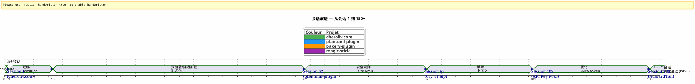
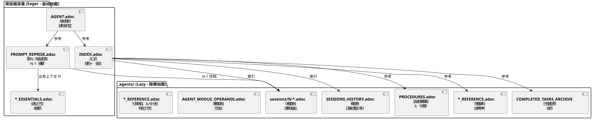
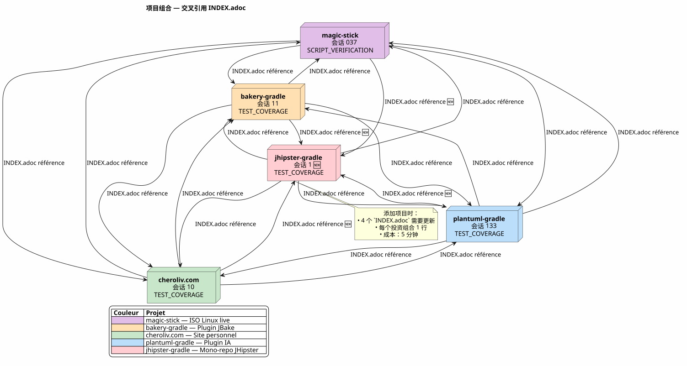
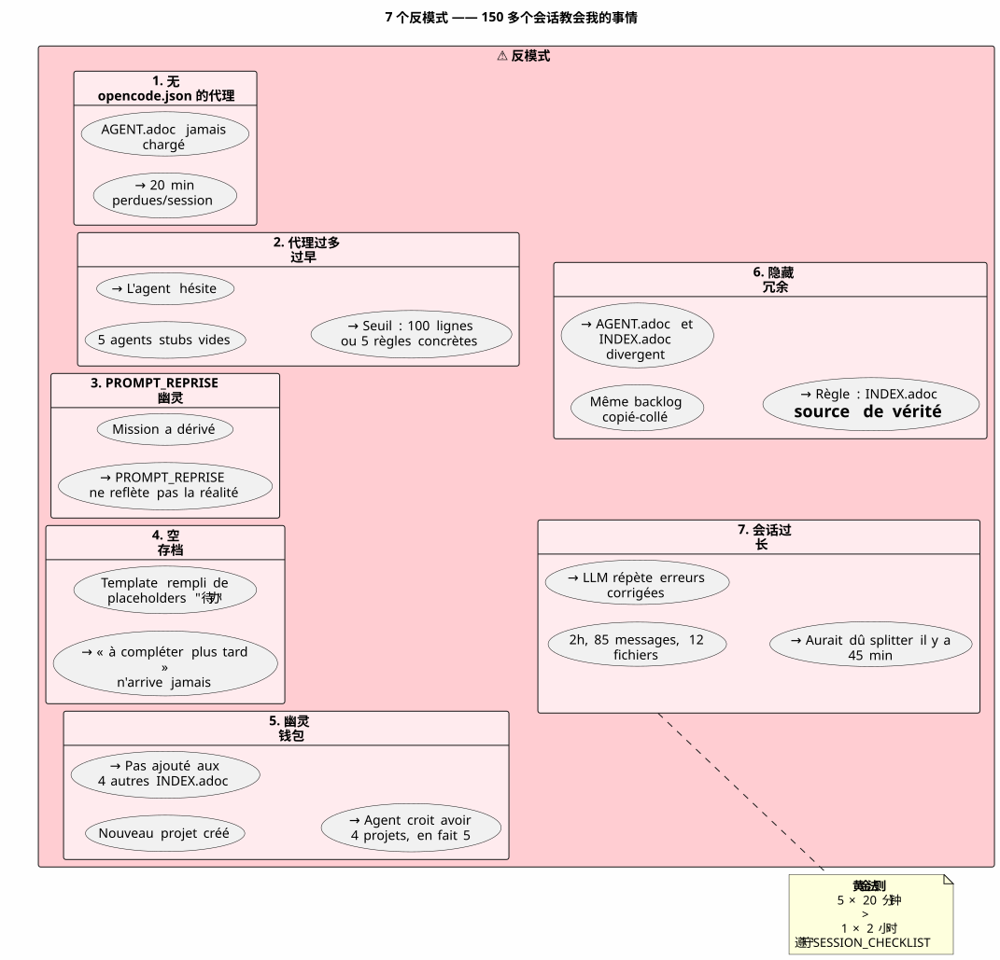

使用 AsciiDoc 管理 AI Agent：我的 Eager/Lazy 策略，旨在实现无上下文泄漏的 Opencode 会话
发布于 24 April 2026
摘要
在多个会话中使用 Opencode 等 AI 代理进行复杂项目工作时，我们面临一个根本问题：上下文泄漏. 代理不记得上一轮会话。我们向它解释的一切 — — 架构、约定、待办事项的状态 — — 都丢失了。在每次会话中重建此上下文既昂贵又慢，且容易出错。
本文阐述了我为解决此问题所构建的手工策略：一种基于 AsciiDoc 文件的持续治理系统，伴随着一种二分法急切/懒惰为了优化上下文 token 的消耗，以及一个必不可少的会话结束程序以确保连续性。
场景：星期一 4月21日，上午9:00
我重新打开 Opencode 以恢复我的 Gradle 插件`plantuml-plugin`. 昨晚，我与API密钥池架构代理讨论了三小时 — 轮询轮转, 配额管理, 自动故障转移。今天早上，代理用金鱼般的眼睛看着我。
(Empty output) — 你好，我是您的 Opencode 助手。今天我能为您提供什么帮助？ __
没有 — 啊，是的，API密钥池，我们当时在YAML结构上。没有 — 注意，PlantumlManager`这是一个 Kotlin 单例对象，不是一个类。 没有 — 不，我们昨天决定了`SyntaxValidationResult`仍是一个嵌套的密封类`PlantumlService.
一切都要重做。或者说：一切都要重新解释。我将会用会话的前二十分钟来重建代理昨天已经掌握的上下文。二十分钟被烧掉的token。二十分钟我本来可以编码，但我不得不进行强制性的教学。
这不是 Opencode 的错误。这是对话式 LLM 的固有特性：两次会话之间，工作记忆是完全擦除. 代理不记得之前的任务、所做的决定、已识别的陷阱，以及我们一起编写的代码。
我经历过这种情况几十次。在四个同时进行的项目中。有持续数周的会话。我计算了一下：平均而言，会话时间的 30% 到 40%被用于重新情境化代理。在项目第87次会议中`plantuml-plugin`, 我崩溃了。我再也无法承受为第十次重新解释`AttemptEntry`是一个顶层数据类在`DiagramProcessor.kt`.
我需要一个系统。不是黑客。真正的治理。
创世记：从混沌到方法
首次会议：黑暗时代
我与 Opencode 的第一个项目`plantuml-plugin`, 它在没有任何治理的情况下启动。我提出一个问题，代理作出回答，我们进行迭代，会话结束，第二天我们又从零开始。那是第1次会话，然后是第2次，第3次……直到第62次会话，我才意识到我已经累计浪费了数小时，反复解释同样的架构。
在第 62 次会议上，数字已经到位：198 个单元测试通过, 42个已验证的功能测试, 插件可以工作。但认知成本无法承受。每个新会话都以二十分钟的项目结构独白开始。
site.yml 这一集被毁坏 (第二场, bakery-plugin)
方法也是在一场灾难中诞生的。 在该项目上`bakery-gradle`, 在第 2 次会议中，我要求代理人修改文件`site.yml`. 代理, 未检查文件是否已版本化，就进行了`Write`完全覆盖内容。 结果：实际的令牌（Firebase API 密钥，部署机密）被虚假的占位符替换。 文件不在 git 中 — 它实际上在`.gitignore`为了保护秘密。
没有保存。没有`git restore`可能。 我被卡住了。 我需要手动重建配置文件， 在我的密码管理器中找回令牌， 全部重新粘合。
正是从这种挫败感中，才产生的绝对规则 1b:
_ 永远不要压碎一个配置文件和一个`Write`完整 当 一个`Edit`部分就够了。永不替换用虚构值替换敏感值检查 git check-ignore 和 `git ls-files在任何修改之前。 _
这条规则，如今已刻在所有我的文件的石板上`AGENT.adoc` et `INDEX.adoc`在四个项目中，它源于一次真实的错误，这让我花费了一小时的手工工作。
从 Markdown 到 AsciiDoc 的迁移 (Session 1, cheroliv.com)
2026年4月25日，在`cheroliv.com`, 我做出了一个彻底的决定：将 Markdown 的全部治理转换为 AsciiDoc。这不是出于审美考虑，而是出于功能需求。AsciiDoc 提供了一种语义结构，LLM 能够更好地读取：层级分明的章节、带类型的表格、告示框(NOTE, WARNING, CAUTION), 机器可读的文档属性。
会话 1 的`cheroliv.com`形式化结构：
-
转换的`AGENTS.md` en
AGENT.adoc -
创建专门的代理 :`CODER.adoc`,
SCRUM_MASTER.adoc,PLANTUML_DESIGNER.adoc -
创建 Eager/Lazy 结构：
INDEX.adoc,SESSIONS_HISTORY.adoc,AGENT_SESSION_MANAGER.adoc,SESSION_CHECKLIST.adoc,PROCEDURES.adoc
只有一个提交：90975e9 refactor: migrate agent governance from Markdown to AsciiDoc. 网站仍在继续运行。

上面的时间线展示了实际的进展。转折点是第87次会话：正是此时，重复的重新情境化的挫折超过容忍阈值，且Eager/Lazy方法不再是一个想法，而成为一种义务。
策略：深入 Eager/Lazy
哲学：应用于认知的计算机缓存
我的方法直接受到计算机缓存管理的启发。一切批评且经常使用必须立即可访问(渴望的). 一切所有的上下文的或体积大的必须按需加载 (懒).
急切 (仪表盘) |
Lazy (业主手册) |
大小 |
< 100 行, < 10k tokens |
无限的，详细的 |
加载 |
自动，会话开始时 |
应代理人要求 |
内容 |
绝对规则，常规任务，紧急状态 |
会话存档，完整历史记录，详细程序，技术参考 |
角色 |
立即引导代理 |
回答深层情境问题 |
Eager 文件 : 仪表盘
这些文件位于每个项目的根目录下，并且在每个会话开始时由代理自动加载。它们构成了仪表盘-- 关键信息，立即可访问。

AGENT.adoc-- 主文件。在`cheroliv.com`, 它有200行，包含：
-
项目的绝对规则(未经许可不得提交，未`rm`未确认)
-
项目结构和代码约定
-
基本命令 (
./gradlew serve,./gradlew test) -
史诗和产品待办列表（优先的用户故事）
-
横向质量标准（可访问性、响应式、兼容性）
在`bakery-plugin`, 规则0不同 :./gradlew -q publishToMavenLocal` 每次修改源代码后必须. 因为在不重新发布本地 JAR 的情况下测试插件让我花了一小时调试尚未打包的代码。
PROMPT_REPRISE.adoc-- 当前会议的任务。每次会议结束时更新，它包含：
-
会话编号和优先任务
-
上一节的总结（已完成的内容和尚未完成的内容）
-
当前会话的接受标准
-
特定的技术提醒
.agents/INDEX.adoc入口点。它概括了绝对规则、最近的会议，尤其是项目组合采用相同的方法进行管理。截至目前，已有五个项目列入其中：
----
----
----
----
| magic-stick | Session 23 | SCRIPT_VERIFICATION.adoc | 2026-04-27 |
| bakery-gradle | Session 11 | TEST_COVERAGE_ANALYSIS | 2026-04-27 |
| cheroliv.com | Session 9 | TEST_COVERAGE_ANALYSIS | 2026-04-27 |
| plantuml-gradle| Session 133| TEST_COVERAGE_ANALYSIS | 2026-04-23 |
| jhipster-gradle-plugins | Session 1 | TEST_COVERAGE_ANALYSIS | 2026-04-28 |
----
**`*_ESSENTIALS.adoc`** -- 最近添加（Session 109, plantuml-plugin）为了进一步优化 Eager 上下文。不再加载 API 密钥池上的 200 行业务上下文，而是只加载 50 行核心内容，其余 150 行仍然保持在 LAZY 状态中`*_REFERENCE.adoc`.
测量结果 : 经过**~25k tokens EAGER 约 ~10k tokens**(增益 60%). 代理不再需要耗能的提醒。
==== 缺失的环节：`opencode.json
我必须向你坦白一件我差点忘记记录的事情。在这些 .adoc 文件之上，有一个微小的 JSON 文件，没有它什么也运行不了。它的名字是`opencode.json`并且它有六行。 literally六行。
[source,json]
----
{
"$schema": "https://opencode.ai/config.json",
"instructions": [
"AGENT.adoc"
]
}
----
这个文件告诉 Opencode : « 启动时，加载`AGENT.adoc`自动。 » 没有他，代理就像一张白纸，正如我在文章开头所描述的那样。 有了他，代理已经掌握了绝对规则、项目架构和基本命令——甚至在我打招呼之前。
我偶然发现了这个文件的重要性。在`bakery-plugin`, 它并不存在。我一直在想为什么该代理在这项目上总是比其他项目更« 迷失»。绝对规则确实在`AGENT.adoc`— 但是`AGENT.adoc`从未被加载。代理仅读取我指示它读取的内容，手动地，在每次会话中。这是第11次会话的`bakery-plugin`当我意识到缺失的`opencode.json`. 我创建了它——第12个会议开始时，和其他会议一样。
这个文件对我来说现在如此明显，以至于我甚至不再想到它。这是开发者对工具太熟悉时常见的错误。如今，我会在开始前系统地创建它 *之前*`AGENT.adoc`. 这是第一块基石。
==== 的双重性 `INDEX.adoc
另一个值得明确说明的细节 :`INDEX.adoc`住在`.agents/`— 我曾将其呈现为LAZY的文件。然而，我在所有表格中都将其列为EAGER。这里显然存在张力。
现场实际情况：文件`.agents/INDEX.adoc`会在会话开始时自动正确加载，与之相同`AGENT.adoc` et `PROMPT_REPRISE.adoc`.他们在`.agents/`为了组织原因 — 不要侵入根目录 — 但他们的行为是急切的。
在`plantuml-plugin`, `INDEX.adoc`有200行，并包含绝对的*完整*规则及其历史（过去会议的经验），带有得分的EPIC，以及项目组合。这是代理查询以了解«我们目前进展如何»的文档。关于`bakery-plugin`, 它有150行，包括路线图和最近的会话。
自愿的冗余之间`AGENT.adoc` et `INDEX.adoc`可能会令人惊讶。 绝对规则在这两者中都存在。 为什么？ 因为它们承担两种不同的角色： 在`AGENT.adoc`, 它们是*解释性的* (规则的故事讲述，学到的教训) ; 在`INDEX.adoc`, 它们是 *可执行的* (裸露的规则，无需证明，以便快速查询)。代理人读取`AGENT.adoc`一次为了*理解*；他重读`INDEX.adoc`à每次会议中进行 *应用*。
[plantuml, format=svg, id=diag-dualite-agent-index, alt="Comparaison entre AGENT.adoc (narratif) et INDEX.adoc (exécutif)"]
----
@startuml
skinparam backgroundColor #FEFEFE
skinparam defaultTextAlignment center
title 二元性 AGENT.adoc ←→ INDEX.adoc
left to right direction
rectangle "AGENT.adoc\n(根 — EAGER)" as AGENT #E3F2FD {
rectangle "📖 **叙事格式**\n规则的叙事\n学到的教训，上下文" as NARR
rectangle "🏗️ **完整架构**\n项目结构, 组件\n详细的 US Backlog" as ARCHI
rectangle "📋 **解释规则**\n为什么规则存在\n事件历史" as EXPL
}
rectangle "INDEX.adoc\n(.agents/ — EAGER)" as INDEX #E8F5E9 {
rectangle "⚡ **执行格式**\n裸规则，无理由\n快速咨询" as EXEC
rectangle "📊 **Roadmap & EPICs**\n概览表\n进度, 分数, 优先级" as ROAD
rectangle "🌐 **项目组合**\n横向视图\n5 个同步项目" as PORT
}
AGENT --> INDEX : "Agent 读取 AGENT.adoc\n1 次为了 **理解**"
INDEX --> AGENT : "代理重新读取 INDEX.adoc\n每次会话以 **应用**"
note bottom of AGENT
Taille max : 200 lignes
end note
note bottom of INDEX
Taille max : 200 lignes
Source de vérité en cas de divergence
end note
@enduml
----
这种被接受的冗余是一种设计选择。它额外消耗大约50行 EAGER tokens — 但它确保代理始终能看到规则，即便是在有助于即时服从的简洁格式中也是如此。
=== LAZY 文件 : 所有者手册
这些文件居住在`.agents/`它们仅在代理需要时被读取。它们构成了该方法的真正财富，因为它们积累了项目的知识而不污染当前的上下文。
[plantuml, format=svg, id=diag-agents-tree, alt="Arborescence complète du dossier .agents/"]
----
@startuml
skinparam folderBackgroundColor #E3F2FD
skinparam folderBorderColor #1565C0
skinparam fileBackgroundColor #FFF3E0
skinparam fileBorderColor #EF6C00
folder ".agents/" as ROOT {
file "INDEX.adoc\n(EAGER -- 200 行)" as IDX #E8F5E9
file "AGENT_SESSION_MANAGER.adoc\n(模板会话)" as ASM
file "SESSION_CHECKLIST.adoc\n(何时更改)" as CHK
file "PROCEDURES.adoc\n(6 步骤 + LAZY/EAGER)" as PRO
file "SESSIONS_HISTORY.adoc\n(所有会话)" as HIS
folder "sessions/" as SESS {
file "1-chore-migration.adoc" as S1
file "109-懒惰形式化.adoc" as S109 #FFECB3
file "133-epic11-article.adoc" as S133
file "... +130 其他" as SMORE
}
folder "档案/" as ARCH {
file "COMPLETED_TASKS_2026-04.adoc" as CTA
file "SESSIONS_HISTORY_83-95.adoc" as SHIST
folder "会话摘要/" as SUM {
file "SESSION_64_SUMMARY.adoc" as SU64
file "SESSION_73_SUMMARY.adoc" as SU73
file "..." as SUMORE
}
folder "prompts_archive/" as PARCH {
file "PROMPT_REPRISE_S65.adoc" as PR65
file "PROMPT_REPRISE_S75.adoc" as PR75
file "..." as PMORE
}
}
}
IDX --> SESS : "索引"
IDX --> HIS : "索引"
IDX --> ARCH : "参考"
note right of S109
Session 109 =
Formalisation stratégie
LAZY/EAGER
Token : ~25k → ~10k
end note
@enduml
----
上面的树形结构显示了文件夹的实际结构`.agents/`在`plantuml-plugin`, 项目最成熟。 请注意三层深度：根文件（元数据），文件夹`sessions/`(按时间顺序的档案)，以及文件`archives/`(聚合和摘要). 这是这种深度将治理从一个简单的TODO文件转变为一个**完整的组织记忆**.
**.agents/sessions/{N}-{titre}.adoc**-- 每次会话的详细档案。 目前：
* `plantuml-plugin` : **133 个已存档会话**(第1届至第133届)
* `bakery-plugin`:**11 次会议**
* `magic-stick`:**23 次会话**
* `cheroliv.com` : **9 次正式会议**+ 7 会话 预系统 重建 追溯地
每个存档包含会话的完整上下文、所作出的决定、遇到的问题及其解决方案、已执行的命令及其输出。
**.agents/SESSIONS_HISTORY.adoc**-- 所有会话的汇总表，带有得分。示例在`cheroliv.com` :
----
| -6 | 2025-05 | chore | Initialisation projet Gradle/JBake | 7/10 | 1 | 2026-04-25 | chore | Migration gouvernance agent | 8/10 | 7 | 2026-04-27 | debug/fix | Correction publishSite | 9/10 | 8 | 2026-04-27 | analyse | Analyse article 0108 | 7/10
**.agents/COMPLETED_TASKS_ARCHIVE_{mois}.adoc**已完成的任务按月归档，以免使活动积压过载。当一个用户故事完成时，它会迁移到这里。积压保持可读：最多 10 个活动项目。
**.agents/PROCEDURES.adoc**-- 会话结束程序的详细模板。虽然很长，但代理在学习该方法时只需阅读一次。之后，程序就会变得机械化。
**.agents/AGENT_MODUS_OPERANDI.adoc**-- 完整的战略文档。关于`plantuml-plugin`, 此文件**900+ 行**实际上被称为`AGENT_METHODOLOGIES.adoc`— 我在写这篇文章和实际实施之间更改了名称。这种命名分歧在一个不断发展的手工系统中是不可避免的。重要的是命名约定：如果文件记录了*方法*，它以...开始`AGENT_`或一个显式前缀。它文档化了 Eager/Lazy 方法论，应遵循的模式，以及应避免的反模式。它是 LAZY，因为一个代理不需要在每次会话时重读整个策略，只有在存在歧义时才需要。
**`*_REFERENCE.adoc`** 项目特定的技术参考。在`magic-stick`, 两个密集的 LAZY 文件 :
* `AB_PARTITION_REFERENCE.adoc`(147 行) -- A/B 分区架构 GPT, 脚本`update-system.sh`, 估计尺寸, 回滚机制
* `BOOT_TEST_REFERENCE.adoc`(144 行) -- QEMU + VNC 用于测试 ISO 启动的程序，无需物理硬件，BIOS/UEFI 检查清单，CI/CD 的限制
在`plantuml-plugin`:
* `ARCHITECTURE.adoc`(134 行) -- 11 个数据类的结构，需要注意的点（应避免的陷阱），优化的测试命令
* `API_KEY_POOL_REFERENCE.adoc`-- 密钥池的完整详细信息 (LAZY 期间`ESSENTIALS`是 EAGER)
== 专业代理：虚拟团队
治理不仅限于被动文件。我已经形式化了一些**专业代理人的角色**在专用的LAZY文件中，这些文件根据任务类型定义了预期的工作流。
|===
|代理 |文件 |角色 |项目 |**编码器** |`CODER.adoc` |FTL/CSS/JS 实现，语义标签，可访问性标准 |cheroliv.com |**Scrum 主管** |`SCRUM_MASTER.adoc` |美国计划，分解为子任务，检测依赖关系 |cheroliv.com |**PlantUML 设计器** |`PLANTUML_DESIGNER.adoc` |创建图表，PUML语法，JBake集成 |cheroliv.com
|===
文件`CODER.adoc`在`cheroliv.com`包含具体规则：_仅一个`<h1>`每页面_ _使用...前缀的路径`${content.rootpath}`_, _声明语言`<html lang="${content.lang!"fr"}">`_. Ces conventions, écrites une fois, sont respectées automatiquement par l'agent depuis la session 1.
文件`SCRUM_MASTER.adoc`施加可交付物的结构：**目标**, **任务**(带赋值的坐标),**接受标准**, **风险**. 当我请求行动计划时，代理会在未经我请求的情况下生成此结构。治理**程序**该特工。
==== 当专业特工变得不可或缺时
专业代理人的创建遵循自然曲线。在项目初期，你不需要它们 —`AGENT.adoc`足够用了。但是当项目增长（比如说，超过20次会话时），必须有两个信号来提醒你：
1. 该代理混合了两个不同领域的约定（例如：PlantUML语法和CSS规则）
2. 你花更多时间来纠正代理关于你已经解释了五次的约定。
在`cheroliv.com`, 发生在会议期间... 1. 是的，从一开始。因为这个项目是一个使用三种语言（FTL、CSS、JS）的网站，包含 AsciiDoc 内容和 PlantUML 图表——三个毫不相关的领域。CODER 代理需要知道字体大小和媒体查询；PLANTUML_DESIGNER 代理需要知道语法`@startuml`. 没有分离，CODER 代理向我提出了图表，反之亦然。混乱。
在`jhipster-gradle-plugins`, 我创建了两个专门适用于 Gradle 插件开发的代理 :`PLUGIN_DEVELOPER.adoc` et `BACKLOG_MANAGER.adoc`. 第一个编码了所有 Kotlin/Gradle 约定（没有`!!`数据类用于模型`@TaskAction`对于任务)。第二个知道`persistence`必须在...之前保持稳定`assistant`不开始其开发 — 一个关键依赖在单仓库中。
不要犯的错误：过早创建过多的代理。`plantuml-plugin`它在会话108之前才正式确立了一个用于API密钥池的专门代理。在此之前，业务上下文一直保持在`AGENT.adoc`. 经验法则：当专业代理的业务领域文档超过100行时，专业代理才是合理的。
==== 会话命名约定
看似微不足道的细节，但在达到 100 次会话时会变得至关重要。如何命名归档文件？
我付出代价才明白，需要一套约定 — — 四个项目，起初有四种不同的格式，我已经搞不清楚了。如今，我所确定的约定是：
----
{N}-{type}-{sujet-kebab-case}.adoc
具体例子：
* `1-chore-migration-gouvernance-agent.adoc`— 会话 1，类型 工作
* `10-solidification-tests.adoc`— 第10次会议，未显式指定类型（主题即可）
* `036-debug-graphify-symlink-epic9.adoc`— 第36次会议，使用3位数字编号进行排序
会话编号是主要的排序标准。使用三位数字编号（001、036、133）的项目在超过99时可以避免字典顺序排序的问题。这就是我现在在`magic-stick` : `001-init-projet.adoc`, `036-debug-graphify-symlink-epic9.adoc`。
类型是可选的，并由会话的关键字推导而来（debug, feature, refactor, docs, chore, test）。使用 kebab-case 的主题是最重要的部分：它应该能够在不打开文件的情况下定位到会话。如果您想知道“是哪次会话，我们修复了集成测试的超时问题？” 的答案是`124-fix-timeout-integration-test.adoc`.
对于重建的历史会话（在治理之前诞生的项目），我使用负数。在`cheroliv.com`, 会话 -6 到 0 涵盖了项目的全部治理前历史。而对于未记录或丢失的会话，我会在这些会话中创建一个条目`SESSIONS_HISTORY.adoc`没有对应的存档，有一个分数`?`. 这比假装更诚实。
[plantuml, format=svg, id=diag-naming-convention, alt="Arbre de décision pour le nommage des fichiers de session"]
----
@startuml
skinparam backgroundColor #FEFEFE
skinparam defaultTextAlignment center
skinparam wrapWidth 200
title 会议命名约定
start
:Une session se termine;
note right: Trigger "会话结束"
if (Session antérieure\nà la gouvernance ?) then (oui)
:Numéro **NÉGATIF**\n-6, -5 ... 0;
note right: Historique\nreconstitué
:Suffixe : reconstitution;
else (non)
:Numéro **POSITIF**\nsur 3 chiffres si > 99;
note right: 001, 036, 133\npour le tri lexicographique
:Détecter le **TYPE**;
if (Mots-clés trouvés ?) then (oui)
:debug / feature / refactor\ndocs / chore / test;
else (non)
:Omettre le type\n(le sujet suffit);
endif
:Formuler le **SUJET** en kebab-case;
note right
Ex: fix-timeout-integration-test
Doit permettre de retrouver
sans ouvrir le fichier
end note
endif
:Nom final : {N}-{type}-{sujet}.adoc;
note right
• 1-chore-migration-gouvernance.adoc
• 036-debug-graphify-symlink.adoc
• 124-fix-timeout-integration-test.adoc
• 133-epic11-article-blog-kg.adoc
end note
if (Session documentée ?) then (oui)
:Créer archive dans sessions/;
:Ajouter ligne SESSIONS_HISTORY\navec score X/10;
else (non)
:Ajouter ligne SESSIONS_HISTORY\navec score **?**\n**sans archive**;
note right: L'honnêteté\nplutôt que le vide
endif
stop
@enduml
----
==== TEST_COVERAGE_ANALYSIS.adoc` — 第5步详细解析
会话结束程序的第5步是最神秘的。它说 « 更新`TEST_COVERAGE_ANALYSIS.adoc`如果有测试被添加或修改。 » 但是这个文件长什么样子？
在`plantuml-plugin`, 它从几行代码演变为完整的结构。这是其稳定形式：
[source]
----
= Analyse de Couverture de Tests
== Suivi des Tests
|===
| Classe de test | Type | Tests | Statut | Dernière MAJ
| PlantumlServiceTest | unit | 45/45 | ✅ PASS | 2026-04-23
| ApiKeyPoolTest | integration | 15/15 | ✅ PASS | 2026-04-20
|===
== Historique par Session
| Session | Tests ajoutés | Tests modifiés | Couverture
| 133 | 0 | 2 | 100%
| 132 | 5 | 0 | 100%
|===
----
兴趣不在于文件本身——而在于必须*记录*发生了什么变化。如果没有这一步骤，经过 50 次会话后，你就不知道哪些测试覆盖了什么内容。代理人也是如此。该文件成为项目测试覆盖率的唯一真相来源。
对于没有传统测试的项目（如`magic-stick`测试 bash 脚本的人)，步骤 5 被替换`SCRIPT_VERIFICATION.adoc`. 机制相同：一个跟踪脚本验证状态的文件。将步骤 5 调整以适应您的项目，但永不要跳过它。它是防止静默回归的安全网。
[plantuml, format=svg, id=diag-dualite-agent-index, alt="Comparaison entre AGENT.adoc (narratif) et INDEX.adoc (exécutif)"]
----
@startuml
skinparam backgroundColor #FEFEFE
skinparam defaultTextAlignment center
title 二元性 AGENT.adoc ←→ INDEX.adoc
left to right direction
rectangle "AGENT.adoc\n（根 — EAGER）" as AGENT #E3F2FD {
rectangle "📖 **叙事格式**\n规则的叙事\n经验教训、背景" as NARR
rectangle "🏗️ **完整架构**\n项目结构、组件\n详细用户故事待办列表" as ARCHI
rectangle "📋 **规则说明**\n规则为何存在\n事件历史" as EXPL
}
rectangle "INDEX.adoc\n(.agents/ — EAGER)" as INDEX #E8F5E9 {
rectangle "⚡ **执行格式**\n赤裸的规则，无需论证\n快速查阅" as EXEC
rectangle "📊 **路线图与 EPIC**\n汇总表\n进度、得分、优先级" as ROAD
rectangle "🌐 **项目组合**\n横向视图\n5 个已同步项目" as PORT
}
AGENT --> INDEX : "Agent 阅读 AGENT.adoc\n1 次以**理解**"
INDEX --> AGENT : "代理每次会话都会重新阅读 INDEX.adoc\n以**应用**"
note bottom of AGENT
Taille max : 200 lignes
end note
note bottom of INDEX
Taille max : 200 lignes
Source de vérité en cas de divergence
end note
@enduml
----
[plantuml, format=svg, id=diag-session-flow, alt="Flux d'une session type avec Eager/Lazy et agents"]
----
@startuml
skinparam backgroundColor #FEFEFE
start
:Début session;
note right: L'agent est une page blanche
:Chargement EAGER auto;
note right
* AGENT.adoc (règles absolues)
* PROMPT_REPRISE.adoc (mission N)
* INDEX.adoc (état projet)
end note
if (Mission claire ?) then (oui)
:Exécution directe;
else (non)
:Charge LAZY sur demande;
note right
* SESSIONS_HISTORY.adoc (contexte passé)
* sessions/{N-1}-*.adoc (décisions)
* *_REFERENCE.adoc (architechture)
end note
endif
:Délégation agent spécialisé ?;
if (CODER ?) then (oui)
:Lit CODER.adoc;
:Suit conventions FTL/CSS;
elseif (SCRUM Master ?) then (oui)
:Lit SCRUM_MASTER.adoc;
:Structure livrable imposée;
elseif (PlantUML ?) then (oui)
:Lit PLANTUML_DESIGNER.adoc;
:Syntaxe PUML + intégration;
else (non)
endif
:Travail de la session;
:Fin de session (trigger utilisateur);
:Procédure 6 étapes;
note right
1. Archive sessions/N-*.adoc
2. Maj PROMPT_REPRISE.adoc (N+1)
3. Maj SESSIONS_HISTORY.adoc
4. Maj INDEX.adoc
5. Maj TEST_COVERAGE (si applicable)
6. Maj COMPLETED_TASKS_ARCHIVE.adoc
end note
:Checklist [✅] x 6;
stop
@enduml
----
上面的图示显示了会话的完整生命周期。关键点在于在 EAGER 加载之后的分支：要么任务足够清晰以便直接执行（占 80% 的情况），要么代理加载 LAZY 以消除歧义（占 20% 的情况）。正是这种区分节省了令牌。
== 会话结束程序：黄金法则
[plantuml, format=svg, id=diag-agents-tree, alt="Arborescence complète du dossier .agents/"]
----
@startuml
skinparam folderBackgroundColor #E3F2FD
skinparam folderBorderColor #1565C0
skinparam fileBackgroundColor #FFF3E0
skinparam fileBorderColor #EF6C00
folder ".agents/" as ROOT {
file "INDEX.adoc\n(EAGER -- 200 行)" as IDX #E8F5E9
file "AGENT_SESSION_MANAGER.adoc\n（会话模板）" as ASM
file "SESSION_CHECKLIST.adoc\n（何时更改）" as CHK
file "PROCEDURES.adoc\n（6 个步骤 + LAZY/EAGER）" as PRO
file "SESSIONS_HISTORY.adoc\n（所有会话）" as HIS
folder "会话/" as SESS {
file "1-杂务-迁移.adoc" as S1
file "109-形式化-lazy.adoc" as S109 #FFECB3
file "133-epic11-article.adoc" as S133
file "... +130 个其他" as SMORE
}
folder "档案/" as ARCH {
file "已完成任务_2026-04.adoc" as CTA
file "会话历史_83-95.adoc" as SHIST
folder "会话摘要/" as SUM {
file "SESSION_64_SUMMARY.adoc" as SU64
file "SESSION_73_SUMMARY.adoc" as SU73
file "..." as SUMORE
}
folder "prompts_archive/" as PARCH {
file "PROMPT_REPRISE_S65.adoc" as PR65
file "PROMPT_REPRISE_S75.adoc" as PR75
file "..." as PMORE
}
}
}
IDX --> SESS : "索引"
IDX --> HIS : "索引"
IDX --> ARCH : "参考"
note right of S109
Session 109 =
Formalisation stratégie
LAZY/EAGER
Token : ~25k → ~10k
end note
@enduml
----
没有此过程，Eager/Lazy 策略毫无用处。正是它把会话的工作转换为持久信息。它执行**根据用户的明确请求**(关键词 : "会话结束", "我离开" 等等)，并且它是**必须的**-- 没有例外，没有遗漏。
文件`SESSION_CHECKLIST.adoc`定义了理想的会话指标：
* 时长：15-30分钟
* 修改的文件：最多 1-3
* LLM 交流：5-10 条消息
* 上下文标记：< 50k
以及需要更换会话的迹象：_LLM 重复了已经纠正的错误_，_同时修改了超过 3 个文件_，_对话超过 50 条消息_。黄金法则：**五次20分钟的会议比一次2小时且调试混乱的会议更好。**
=== 六步流程（静默地）
[plantuml, format=svg, id=diag-end-session-flow, alt="Flux de la procédure de fin de session"]
----
@startuml
skinparam defaultTextAlignment center
skinparam wrapWidth 200
skinparam activityBackgroundColor #E3F2FD
start
:L'utilisateur dit "会话结束";
note right: Mots-clés déclencheurs
:Agent détecte le trigger;
:Étape 1\nCréer archive\n`.agents/sessions/N-*.adoc`;
note right: Tout le contexte de la session
:Étape 2\nMettre à jour\n`PROMPT_REPRISE.adoc`;
note right: Mission N + critères d'acceptation N+1
:Étape 3\nMettre à jour\n`SESSIONS_HISTORY.adoc`;
note right: Ligne récap : # / Date / Type / Sujet / Score
:Étape 4\nMettre à jour\n`INDEX.adoc`;
note right: État courant, roadmap, fichiers modifiés
:Étape 5\nMettre à jour\n`TEST_COVERAGE_ANALYSIS.adoc`;
note right: Si tests ajoutés ou modifiés
:Étape 6\nMettre à jour\n`COMPLETED_TASKS_ARCHIVE.adoc`;
note right: Archiver tâches terminées
:Afficher la checklist de confirmation;
note right: Vérifier que chaque [✅] est mérité
stop
@enduml
----
=== 150+ 次会议的结果
以下是该程序在我的四个项目上系统应用后得到的结果：
**PlantUML 插件** :
* **133 场会议**自项目开始以来
* **240/240 项测试通过**(100% 覆盖率) -- EPICs 1-7 已完成
* **57 场景 Cucumber BDD**已验证
* 源自真实错误的配置文件安全规则（第2次会话 bakery-plugin）
**面包店插件**:
* **11 次会议**两周内
* Supabase → Firebase 迁移已完成（已修复 9 个测试）
* EPIC 6 (publishProfile) 在生产环境中可用
* 已创建规则 0 :`publishToMavenLocal`每次修改后必需
**魔法棒** :
* **23 次会议**构建带有 A/B 分区的 Xubuntu 实时系统
* 第一个ISO在会话10中生成
* QEMU + VNC 启动测试正式化（LAZY 文档共 144 行）
* CI/CD SourceForge 正常运行
**cheroliv.com**:
* **9次正式会议**+ 重建 7 个预系统会话
* 文章 0101 (OpenCode PATH) 已发布
* Article 0108（此）在分析其不足后重写
* 完整治理已从 Markdown 迁移到 AsciiDoc
=== 最终检查清单
在静默执行完6个步骤后，代理必须显示确认清单：
✅ Procédure de fin de session exécutée 📋 Checklist :
**绝对规则**: 没有步骤可以被标记`[✅]`如果文件实际上没有被修改和验证。
== Bootstrap指南：第1天，第0节
你对这种方法有信心。你想把它应用到一个新项目中。从哪里开始？
我在2026年4月28日经历了这一刻。我打开 Opencode 在`jhipster-gradle-plugins`, 我的两个插件 Gradle JHipster 单仓库。这是一个已经存在的项目 — 代码就在那里，Gradle 任务可以运行。但治理代理？零。空白页面。正如`plantuml-plugin`自从其第一次会议以来已经过去数月。
这是我所遵循的确切程序，我也将对所有新项目采用此程序。请注意顺序 — — 这一点很重要。
[plantuml, format=svg, id=diag-bootstrap, alt="Flux de bootstrap en 6 étapes pour initialiser la gouvernance agent sur un nouveau projet"]
----
@startuml
skinparam backgroundColor #FEFEFE
skinparam defaultTextAlignment center
skinparam wrapWidth 250
skinparam activityBackgroundColor #E8F5E9
title Bootstrap 治理 — 第 1 天，第 0 次会话
start
:Étape 0\nCréer **opencode.json**\n(6 lignes, instructions: AGENT.adoc);
note right: Le pont qui charge\nAGENT.adoc automatiquement
:Étape 1\nCréer les dossiers\n**mkdir -p .agents/sessions/ .agents/archives/**;
note right: Les conteneurs vides\navant que l'agent écrive dedans
:Étape 2\nCréer **AGENT.adoc**\n(200 lignes, règles absolues);
note right: Le fichier maître\nStructure minimale v1
:Étape 3\nCréer **PROMPT_REPRISE.adoc**\nMission session 1 (max 70 lignes);
note right: Ce que l'agent doit\nfaire à la prochaine session
:Étape 4\nCréer **.agents/INDEX.adoc**\nRègles exécutives + roadmap;
note right: Point d'entrée EAGER\ndans le dossier LAZY
:Étape 5\nCréer les fichiers LAZY structurants\n6 fichiers : SESSIONS_HISTORY, CHECKLIST, etc.;
note right
• SESSIONS_HISTORY.adoc
• SESSION_CHECKLIST.adoc
• PROCEDURES.adoc
• AGENT_SESSION_MANAGER.adoc
• TEST_COVERAGE_ANALYSIS.adoc
• Agents spécialisés (si besoin)
end note
:Étape 6\nAjouter le projet au Portefeuille\nMettre à jour TOUS les INDEX.adoc existants;
note right: Maintenance transverse\nObligatoire mais fastidieuse
:✅ Bootstrap terminé\nSession 1 prête;
note right: 20 minutes investies\nDes centaines économisées
stop
@enduml
----
=== 步骤 0：创建 `opencode.json
这是第一个文件。不`AGENT.adoc`, 不`INDEX.adoc`。`opencode.json`首先，因为一个简单的原因 : 如果你创建`AGENT.adoc`首先，你会忘记创建自动加载它的桥梁。我在...上做了它`bakery-plugin`, 我知道我在说什么。
=== 步骤 1：创建文件夹
[source,bash]
----
mkdir -p .agents/sessions .agents/archives
----
两个空文件夹。`sessions/`它将收到每个会话的档案。`archives/`将收到每月的 COMPLETED_TASKS_ARCHIVE。这些文件夹必须在代理需要写入之前*先*存在。一个同时必须创建文件夹和文件的代理，可能会静默失败。
=== 步骤 2 : 创建 `AGENT.adoc` — 主文件
最小结构用于第一个版本（它将会增长）：
[source]
----
= {NOM_PROJET} — Directives Agent
[CAUTION]
----
[plantuml, format=svg, id=diag-naming-convention, alt="Arbre de décision pour le nommage des fichiers de session"]
----
@startuml
skinparam backgroundColor #FEFEFE
skinparam defaultTextAlignment center
skinparam wrapWidth 200
title 会话命名约定
start
:Une session se termine;
note right: Trigger "会话结束"
if (Session antérieure\nà la gouvernance ?) then (oui)
:Numéro **NÉGATIF**\n-6, -5 ... 0;
note right: Historique\nreconstitué
:Suffixe : reconstitution;
else (non)
:Numéro **POSITIF**\nsur 3 chiffres si > 99;
note right: 001, 036, 133\npour le tri lexicographique
:Détecter le **TYPE**;
if (Mots-clés trouvés ?) then (oui)
:debug / feature / refactor\ndocs / chore / test;
else (non)
:Omettre le type\n(le sujet suffit);
endif
:Formuler le **SUJET** en kebab-case;
note right
Ex: fix-timeout-integration-test
Doit permettre de retrouver
sans ouvrir le fichier
end note
endif
:Nom final : {N}-{type}-{sujet}.adoc;
note right
• 1-chore-migration-gouvernance.adoc
• 036-debug-graphify-symlink.adoc
• 124-fix-timeout-integration-test.adoc
• 133-epic11-article-blog-kg.adoc
end note
if (Session documentée ?) then (oui)
:Créer archive dans sessions/;
:Ajouter ligne SESSIONS_HISTORY\navec score X/10;
else (non)
:Ajouter ligne SESSIONS_HISTORY\navec score **?**\n**sans archive**;
note right: L'honnêteté\nplutôt que le vide
endif
stop
@enduml
----
1. 读取整个文件
2. 检查 git ls-files
3. 请求确认
4. 等待 "是
== 项目
**名称**: ... **栈**: ... **文档**: AsciiDoc
== 绝对规则
=== 0. 开发环境
必要的命令...
=== 1. 提交/GIT
[plantuml, format=svg, id=diag-session-flow, alt="Flux d'une session type avec Eager/Lazy et agents"]
----
@startuml
skinparam backgroundColor #FEFEFE
start
:Début session;
note right: L'agent est une page blanche
:Chargement EAGER auto;
note right
* AGENT.adoc (règles absolues)
* PROMPT_REPRISE.adoc (mission N)
* INDEX.adoc (état projet)
end note
if (Mission claire ?) then (oui)
:Exécution directe;
else (non)
:Charge LAZY sur demande;
note right
* SESSIONS_HISTORY.adoc (contexte passé)
* sessions/{N-1}-*.adoc (décisions)
* *_REFERENCE.adoc (architechture)
end note
endif
:Délégation agent spécialisé ?;
if (CODER ?) then (oui)
:Lit CODER.adoc;
:Suit conventions FTL/CSS;
elseif (SCRUM Master ?) then (oui)
:Lit SCRUM_MASTER.adoc;
:Structure livrable imposée;
elseif (PlantUML ?) then (oui)
:Lit PLANTUML_DESIGNER.adoc;
:Syntaxe PUML + intégration;
else (non)
endif
:Travail de la session;
:Fin de session (trigger utilisateur);
:Procédure 6 étapes;
note right
1. Archive sessions/N-*.adoc
2. Maj PROMPT_REPRISE.adoc (N+1)
3. Maj SESSIONS_HISTORY.adoc
4. Maj INDEX.adoc
5. Maj TEST_COVERAGE (si applicable)
6. Maj COMPLETED_TASKS_ARCHIVE.adoc
end note
:Checklist [✅] x 6;
stop
@enduml
----
=== 1b. 配置文件 — 绝对安全规则
永远不要压碎...
=== 2. 会议结束时的测试
正式禁止...
=== 3. 会话结束程序
6个必须的步骤...
== 上下文管理 — LAZY/EAGER
急切文件 / 懒惰文件...
[plantuml, format=svg, id=diag-end-session-flow, alt="Flux de la procédure de fin de session"]
----
@startuml
skinparam defaultTextAlignment center
skinparam wrapWidth 200
skinparam activityBackgroundColor #E3F2FD
start
:L'utilisateur dit "会话结束";
note right: Mots-clés déclencheurs
:Agent détecte le trigger;
:Étape 1\nCréer archive\n`.agents/sessions/N-*.adoc`;
note right: Tout le contexte de la session
:Étape 2\nMettre à jour\n`PROMPT_REPRISE.adoc`;
note right: Mission N + critères d'acceptation N+1
:Étape 3\nMettre à jour\n`SESSIONS_HISTORY.adoc`;
note right: Ligne récap : # / Date / Type / Sujet / Score
:Étape 4\nMettre à jour\n`INDEX.adoc`;
note right: État courant, roadmap, fichiers modifiés
:Étape 5\nMettre à jour\n`TEST_COVERAGE_ANALYSIS.adoc`;
note right: Si tests ajoutés ou modifiés
:Étape 6\nMettre à jour\n`COMPLETED_TASKS_ARCHIVE.adoc`;
note right: Archiver tâches terminées
:Afficher la checklist de confirmation;
note right: Vérifier que chaque [✅] est mérité
stop
@enduml
----
=== 步骤 3：创建 `PROMPT_REPRISE.adoc` — 第一次会话的使命
一个文件明确说明：“这是第1会话，任务待定。” 最多70行，包含Session 0部分（引导程序摘要）和Session 1部分（与用户定义的优先事项）。
=== 步骤 4 : 创建 `.agents/INDEX.adoc` — 入口点
将包含绝对规则（执行版本）和会话表的文件。对于引导，它列出了以简洁格式的规则 0 到 3、项目组合（包括带有表情符号 🆕 的新项目）以及准备好填充的空路线图。
=== 步骤5：创建LAZY结构文件
按顺序：
1. `.agents/SESSIONS_HISTORY.adoc`— 仅包含会话0的表格
2. `.agents/SESSION_CHECKLIST.adoc`— 模板 « 何时更改会话
3. `.agents/PROCEDURES.adoc`— 完整的6步骤程序 + EAGER/LAZY
4. `.agents/AGENT_SESSION_MANAGER.adoc`— 存档模板
5. `.agents/TEST_COVERAGE_ANALYSIS.adoc`— 测试跟踪表，最初为空
如果您的项目有复杂的业务领域（如`jhipster-gradle-plugins`带有其单仓库 persistence/assistant), 立即创建专门的代理：
1. `.agents/PLUGIN_DEVELOPER.adoc`— 代码约定和依赖边界（如果是插件）
2. `.agents/BACKLOG_MANAGER.adoc`— 规划结构和已识别的风险
不要创建您不会使用的代理。没有具体编码约定的代理是一个会造成污染的死文件。`.agents/`。
=== 步骤 6 ：将项目添加到所有项目的投资组合中
这是我们总是会忘记的一步。每`INDEX.adoc`每个项目包含一个“项目组合”表格，列出所有使用相同方法论的项目。当您创建一个新项目时，您必须：
1. 在新项目的投资组合中添加一行（逻辑）
2. 在所有现有项目的投资组合中添加一行 — 是的，全部
在我的四个（现在是五个）项目中，这意味着打开`INDEX.adoc` de `magic-stick`, `bakery-gradle`, `cheroliv.com`, `plantuml-gradle`并添加该行`jhipster-gradle-plugins | Session 1 | ... | 2026-04-28 🆕`.
这很繁琐。这是手动的。这也是确保无论你在哪个项目上工作，代理都能知道其他项目存在以及它们状态的唯一方法。在会话012的`magic-stick`, 代理人检测到投资组合中有两处不一致 —`bakery-gradle`它的 COMPLETED_TASKS_ARCHIVE 延迟了，和`plantuml-gradle`他的程序文档（5 步）与其 INDEX（6 步）之间存在偏差。没有这个横向表格，这些不一致将会一直保持不可见。
[plantuml, format=svg, id=diag-portfolio-graph, alt="Graphe du portefeuille de projets — références croisées entre INDEX.adoc"]
----
@startuml
skinparam backgroundColor #FEFEFE
skinparam defaultTextAlignment center
skinparam nodeBackgroundColor #E3F2FD
title 项目组合 — 交叉引用 INDEX.adoc
node "**魔法棒**\n会话 037\n脚本验证" as MS #E1BEE7
node "**bakery-gradle**\n会话 11\nTEST_COVERAGE" as BG #FFE0B2
node "cheroliv.com\n会话 10\n测试覆盖率" as CH #C8E6C9
node "**plantuml-gradle**\n会话 133\n测试覆盖率" as PG #BBDEFB
node "**jhipster-gradle**\n会话 1 🆕\nTEST_COVERAGE" as JG #FFCDD2
MS --> BG : INDEX.adoc référence
MS --> CH : INDEX.adoc référence
MS --> PG : INDEX.adoc référence
MS --> JG : INDEX.adoc référence 🆕
BG --> MS : INDEX.adoc référence
BG --> CH : INDEX.adoc référence
BG --> PG : INDEX.adoc référence
BG --> JG : INDEX.adoc référence 🆕
CH --> MS : INDEX.adoc référence
CH --> BG : INDEX.adoc référence
CH --> PG : INDEX.adoc référence
CH --> JG : INDEX.adoc référence 🆕
PG --> MS : INDEX.adoc référence
PG --> BG : INDEX.adoc référence
PG --> CH : INDEX.adoc référence
PG --> JG : INDEX.adoc référence 🆕
JG --> MS : INDEX.adoc référence
JG --> BG : INDEX.adoc référence
JG --> CH : INDEX.adoc référence
JG --> PG : INDEX.adoc référence
note bottom of JG
Quand on ajoute un projet :
• 4 INDEX.adoc à mettre à jour
• 1 ligne par portefeuille
• Coût : 5 minutes
end note
legend bottom
|= Couleur |= Projet |
| <#E1BEE7> | magic-stick — ISO Linux live |
| <#FFE0B2> | bakery-gradle — Plugin JBake |
| <#C8E6C9> | cheroliv.com — Site personnel |
| <#BBDEFB> | plantuml-gradle — Plugin IA |
| <#FFCDD2> | jhipster-gradle — Mono-repo JHipster |
endlegend
@enduml
----
我在这里听到你说：“但这是重复！”是的。这是自愿的重复。每`INDEX.adoc`它是自主的。 如果您打开一个会话在`magic-stick`, 代理必须知道`plantuml-gradle`它目前处于第133个会话，无需在其他目录打开文件。这是项目间独立性的代价 — 每个投资组合5行。
=== Bootstrap 的成本
[plantuml, format=svg, id=diag-bootstrap, alt="Flux de bootstrap en 6 étapes pour initialiser la gouvernance agent sur un nouveau projet"]
----
@startuml
skinparam backgroundColor #FEFEFE
skinparam defaultTextAlignment center
skinparam wrapWidth 250
skinparam activityBackgroundColor #E8F5E9
title Bootstrap 治理 — 第1天，第0场会议
start
:Étape 0\nCréer **opencode.json**\n(6 lignes, instructions: AGENT.adoc);
note right: Le pont qui charge\nAGENT.adoc automatiquement
:Étape 1\nCréer les dossiers\n**mkdir -p .agents/sessions/ .agents/archives/**;
note right: Les conteneurs vides\navant que l'agent écrive dedans
:Étape 2\nCréer **AGENT.adoc**\n(200 lignes, règles absolues);
note right: Le fichier maître\nStructure minimale v1
:Étape 3\nCréer **PROMPT_REPRISE.adoc**\nMission session 1 (max 70 lignes);
note right: Ce que l'agent doit\nfaire à la prochaine session
:Étape 4\nCréer **.agents/INDEX.adoc**\nRègles exécutives + roadmap;
note right: Point d'entrée EAGER\ndans le dossier LAZY
:Étape 5\nCréer les fichiers LAZY structurants\n6 fichiers : SESSIONS_HISTORY, CHECKLIST, etc.;
note right
• SESSIONS_HISTORY.adoc
• SESSION_CHECKLIST.adoc
• PROCEDURES.adoc
• AGENT_SESSION_MANAGER.adoc
• TEST_COVERAGE_ANALYSIS.adoc
• Agents spécialisés (si besoin)
end note
:Étape 6\nAjouter le projet au Portefeuille\nMettre à jour TOUS les INDEX.adoc existants;
note right: Maintenance transverse\nObligatoire mais fastidieuse
:✅ Bootstrap terminé\nSession 1 prête;
note right: 20 minutes investies\nDes centaines économisées
stop
@enduml
----
在`jhipster-gradle-plugins`, 这个 bootstrap 花了我恰好 18 分钟 — 的`mkdir .agents/`最后的`INDEX.adoc`在投资组合中的更新`magic-stick`. 将要进行的第 1 部分将由已经了解 mono-repo 结构、Gradle 命令以及临界边界的代理启动`persistence/`(lightweight) 和`assistant/`(沉重)。二十分钟投入很值得。
== 4（现在为5）个项目，5个治理，1种方法
Eager/Lazy 系统不是直接复制粘贴的样板代码。每个项目都根据自身特点对该方法进行了适配。
=== cheroliv.com : 个人网站
**特异性**编辑内容，WCAG 2.1 AA 可访问性，JBake 静态。 **适应**六个已排优先级的史诗（P0-P4），专门代理人（CODER, SCRUM_MASTER, PLANTUML_DESIGNER），横向可访问性验收标准 **标志性规则**:`./gradlew serve`强制性，正式禁止脚本`jbake.sh`外部的。
=== bakery-gradle : 多用途插件
**特异性**具有发布任务、Firebase 代码生成、YAML 解析的 Gradle 插件。 **适应**: 规则 0（publishToMavenLocal），配置文件的安全规则因事件而加强`site.yml`, EPIC 9 和 10 关于多文件配置。 **标志性规则**:`publishToMavenLocal`在每次修改插件源代码后。
=== plantuml-gradle : 插件 IA
**特异性**: 集成 LangChain4j，通过 LLM 生成 PlantUML 图表，使用云 API 密钥进行测试。 **适应**: 文档 LAZY dense (ARCHITECTURE, API_KEY_POOL_REFERENCE, DATASET_FINETUNING), EPICs 编号 (1-11 已完成, 107+ 进行中), EAGER/LAZY 分离优化 (节省 60% 的标记). **标志性规则**: 文件`*_ESSENTIALS.adoc`(50 行) vs`*_REFERENCE.adoc`(无限的) 用于 API 密钥池。
=== magic-stick : 实时系统
**特异性**: 构建 Xubuntu 的 Linux live ISO，GPT A/B 分区，使用 SourceForge 的 CI/CD **适应**: 复杂的LAZY技术参考 (AB_PARTITION, BOOT_TEST), SCRIPT_VERIFICATION.adoc 作为特定的步骤5 (不是传统测试，而是 bash 脚本验证)。 **标志性规则**:`isoTestAB`在 CI 中跳过（非特权运行者），保留给使用 Docker 的本地环境的测试`--privileged`。
== 绝对横向规则
一些出现在文件中的关键规则`AGENT.adoc`Eager 并且适用于所有项目的所有会话：
**开发环境**
* ✅ 使用项目特定的命令 (`./gradlew serve`, `./gradlew functionalTest`, 等等)
* ❌ 禁止使用未版本化的外部脚本
**Git**
* ✅ 仅允许只读`git status`, `git diff`, `git log`)
* ❌ `git add`, `git commit`, `git push`禁止未经明确许可
* ❌`git commit --amend`除非条件得到严格遵守，否则禁止
**配置文件**
* ❌ 永远不要用一个覆盖配置文件`Write`完整时一个`Edit`部分就够了
* ❌ 永远不要用虚假值替换敏感值
* ❌ 检查`git check-ignore` et `git ls-files`在任何修改之前
**测试**
* 切勿在会话结束流程中未经明确授权的情况下运行测试
**禁止工具**
* ❌`TodoWrite` et `Task`-- 治理通过 AsciiDoc 文件进行，而不是通过外部工具
== 反模式：150+ 次会议让我学到的
回过头来看，某些错误已经变成了如此可预测的模式，以至于我可以把它们列为反模式 — — 所有新项目很可能陷入的陷阱。以下列出，按频率排序。
[plantuml, format=svg, id=diag-antipatterns, alt="Les 7 anti-patterns de la gouvernance agent — arbre des pièges à éviter"]
----
@startuml
skinparam backgroundColor #FEFEFE
skinparam defaultTextAlignment center
skinparam wrapWidth 180
title 7种反模式 — 150+ 次会议让我学到的
left to right direction
rectangle "反模式" as ROOT #FFCDD2 {
together {
card "**1. 无代理**\n**opencode.json**" as AP1 #FFEBEE {
(AGENT.adoc jamais chargé)
(→ 20 min perdues/session)
}
card "2. 代理太多\n太早" as AP2 #FFEBEE {
(5 agents stubs vides)
(→ L'agent hésite)
(→ Seuil : 100 lignes\nou 5 règles concrètes)
}
card "**3. PROMPT_REPRISE**\n**幽灵**" as AP3 #FFEBEE {
(Mission a dérivé)
(→ PROMPT_REPRISE\nne reflète pas la réalité)
}
}
together {
card "**4. 档案**\n**空**" as AP4 #FFEBEE {
(Template rempli de\nplaceholders "待办")
(→ « à compléter plus tard »\nn'arrive jamais)
}
card "**5. 钱包**\n**幽灵**" as AP5 #FFEBEE {
(Nouveau projet créé)
(→ Pas ajouté aux\n4 autres INDEX.adoc)
(→ Agent croit avoir\n4 projets, en fait 5)
}
card "**6. 冗余**\n**隐藏的**" as AP6 #FFEBEE {
(Même backlog copié-collé)
(→ AGENT.adoc et INDEX.adoc\ndivergent)
(→ Règle : INDEX.adoc\n= source de vérité)
}
}
card "7. **会话太**\n**长**" as AP7 #FFEBEE {
(2h, 85 messages, 12 fichiers)
(→ LLM répète erreurs corrigées)
(→ Aurait dû splitter il y a 45 min)
}
}
note right of AP7
**Règle d'Or**
5 × 20 min
>
1 × 2 heures
Respecter SESSION_CHECKLIST
end note
@enduml
----
=== 反模式 1 : 没有 `opencode.json` 的代理
这是第一个错误。你写了一个精彩的`AGENT.adoc`200 行，但从不自动加载。代理以裸体启动。您花了 20 分钟重新建立上下文 — — 这正是该方法旨在避免的情况。
*症状* : 代理人对项目结构提出基本问题，而所有内容都在`AGENT.adoc`. *Correction* : 创建`opencode.json`带有块`instructions: ["AGENT.adoc"]`. 检查文件是否存在于 Opencode 的工作目录中。
=== Anti-Pattern 2 : 太多代理太早
在您的项目的第 2 次会话中，您创建了 5 个专业代理。没有一个有实际内容，它们都是存根。结果：`.agents/`被空文件污染，且代理犹豫要加载哪一个。
*症状* : 代理文件仅包含“待定”或为空的10行结构。 *修正* : 当专门代理的业务领域超过100行或至少编码5条具体规则时，该代理是合理的。在此以下，内容可以容纳于`AGENT.adoc`.
=== 反模式 3：幽灵 PROMPT_REPRISE
`PROMPT_REPRISE.adoc`正在更新...但仅在会话结束时，当代理执行该过程时更新。在此期间，会话的实际任务已经偏离 — 我们修复了一个未预见的 bug，而不是实施计划中的功能。Le`PROMPT_REPRISE.adoc`会议结束的情况并不反映实际上发生的事情。
*症状* : 此部分 « 优先事项 » 的`PROMPT_REPRISE.adoc`提到一个未被修改的功能，而你却把整个会话花在了一个严重的 bug 上。 *Correction* : 更新`PROMPT_REPRISE.adoc`当会话偏离其初始使命时，实时进行。不要等待会话结束程序来记录方向的变化。会话期间的30秒编辑胜过一个`PROMPT_REPRISE`虚假的。
=== 反模式 4 : 空存档
会话结束程序创建了归档... 但代理急于显示其检查清单，用占位符填充了模板。`{detail}`变成「待补充的细节」。这个「以后」永远不会到来。
*症状*：会话存档包含 « TODO », « 待完成 », 或空的部分。 *修正* : 绝对规则规定，如果文件没有实际修改，则任何步骤不能被标记为 [✅]。请自行应用：在显示清单前，重新阅读存档。如果某部分为空，请立即填写。
=== 反模式5：幻影钱包
您创建了一个治理完美的新项目。但您忘记把它添加到其他项目的投资组合中。三周后，您打开一个会话在`magic-stick`而且代理告诉你你有4个项目。你实际上有5个。代理不知道这一点。
*症状* : 投资组合中项目的计数与实际情况不符。 *Correction* : 脚本化钱包更新，或至少维护一个包含「Mettre à jour le portefeuille de tous les projets existants」的 post-bootstrap 检查清单。这是方法中最繁琐的一步，因此也最常被省略。
[plantuml, format=svg, id=diag-portfolio-graph, alt="Graphe du portefeuille de projets — références croisées entre INDEX.adoc"]
----
@startuml
skinparam backgroundColor #FEFEFE
skinparam defaultTextAlignment center
skinparam nodeBackgroundColor #E3F2FD
title 项目组合 — 交叉引用 INDEX.adoc
node "**magic-stick**\n第 037 场\n脚本验证" as MS #E1BEE7
node "**bakery-gradle**\n第 11 节\n测试覆盖率" as BG #FFE0B2
node "**cheroliv.com**\n第10次会话\n测试覆盖率" as CH #C8E6C9
node "**plantuml-gradle**\n会话 133\n测试覆盖率" as PG #BBDEFB
node "**jhipster-gradle**\n第 1 节 🆕\n测试覆盖率" as JG #FFCDD2
MS --> BG : INDEX.adoc référence
MS --> CH : INDEX.adoc référence
MS --> PG : INDEX.adoc référence
MS --> JG : INDEX.adoc référence 🆕
BG --> MS : INDEX.adoc référence
BG --> CH : INDEX.adoc référence
BG --> PG : INDEX.adoc référence
BG --> JG : INDEX.adoc référence 🆕
CH --> MS : INDEX.adoc référence
CH --> BG : INDEX.adoc référence
CH --> PG : INDEX.adoc référence
CH --> JG : INDEX.adoc référence 🆕
PG --> MS : INDEX.adoc référence
PG --> BG : INDEX.adoc référence
PG --> CH : INDEX.adoc référence
PG --> JG : INDEX.adoc référence 🆕
JG --> MS : INDEX.adoc référence
JG --> BG : INDEX.adoc référence
JG --> CH : INDEX.adoc référence
JG --> PG : INDEX.adoc référence
note bottom of JG
Quand on ajoute un projet :
• 4 INDEX.adoc à mettre à jour
• 1 ligne par portefeuille
• Coût : 5 minutes
end note
legend bottom
|= Couleur |= Projet |
| <#E1BEE7> | magic-stick — ISO Linux live |
| <#FFE0B2> | bakery-gradle — Plugin JBake |
| <#C8E6C9> | cheroliv.com — Site personnel |
| <#BBDEFB> | plantuml-gradle — Plugin IA |
| <#FFCDD2> | jhipster-gradle — Mono-repo JHipster |
endlegend
@enduml
----
您复制粘贴相同的 50 行待办事项列表到`AGENT.adoc` et `INDEX.adoc`. 在下次会话中，你更新了其中一个但不是另一个。你的两个 EAGER 文件相互矛盾。
*症状* : 列出的 EPIC 之间出现了分歧`AGENT.adoc`以及其中的那些`INDEX.adoc`. *纠正* : 冗余必须被*假设并有界*。`AGENT.adoc`包含带有用户故事的详细待办列表。`INDEX.adoc`仅包含 EPIC 的汇总表（名称、进度、优先级）。如果两者有分歧，则是`INDEX.adoc`被视为权威的——因为它是在每次会话结束时更新的。在您的...中记录此规则`AGENT.adoc`: « 如果AGENT.adoc和INDEX.adoc之间存在分歧，INDEX.adoc是真实来源。
=== 反模式 7：会话过长
您忽略了...的信号`SESSION_CHECKLIST.adoc`. 2小时，85条消息，12个文件已修改。 代理在循环运行，你也是。 你本应在45分钟前切换会话。
*症状* : LLM 重复已修正的错误，上下文 token 超过 80k，您已同时进行了修改`persistence/` et `assistant/`在同一会话中。 *修正* : 该`SESSION_CHECKLIST.adoc`它存在是有原因的。请尊重它。黄金法则不是建议。5 次 20 分钟的会话 > 1 次 2 小时的会话。
== 为什么要使用 AsciiDoc？
我选择 AsciiDoc 是因为有几个直接影响治理效率的务实原因：
1. **丰富的语义结构**: 章节、表格、警示、文档属性。代理更擅长阅读结构化文档而非纯文本。
2. **文档属性**(`:jbake-type:`, `:jbake-status:`) 允许定义机器和人类可读的元数据。
3. **与 JBake 兼容**: 我的静态站点由 JBake 生成，它原生支持 AsciiDoc。治理文件和博客文章共享相同的格式。我的关于治理的博客文章 *sur* 使用与治理相同的格式编写。
4. **长寿**: AsciiDoc 是一种经过验证的技术文档格式，具有稳定的规范。
== 结果：无缝连续性
自从我建立了这个系统以来，在不同的 Opencode 会话之间切换变得非常流畅。代理会准确地从我离开的地方继续，而我不需要重新进行上下文设置。
在会议 3 中做出的决定可以在会议 133 中访问。待办列表在五个同时进行的项目中保持一致。安全规则（尤其涉及 git 和配置文件）得到了遵守，因为它们在 Eager 文件中无处不在。
数据说话：
* **150+ 个已归档的会话**总共
* **节省了60%的EAGER令牌**优化后 (会话 109)
* **无需提醒**在 API 密钥池的业务背景下
* **100% 的测试通过**在 plantuml-plugin (240/240)
* **一次灾难**(Session 2 bakery-plugin) 产生了绝对安全规则
这是一个**手工艺系统**, 使用行业工具构建（AsciiDoc, git, Gradle），不依赖于专有平台。它体现了我的根本信念：**一个可靠的开发者构建并使用自己的工具**.
== 链接
* 我的站点：[cheroliv.com](https://cheroliv.com)
* 项目`bakery-gradle`: [github.com/cheroliv/bakery-gradle-plugin](https://github.com/cheroliv/bakery-gradle-plugin)
* 项目`plantuml-gradle`： [github.com/cheroliv/plantuml-gradle-plugin](https://github.com/cheroliv/plantuml-gradle-plugin)
* 项目`magic-stick`: [github.com/cheroliv/magic-stick](https://github.com/cheroliv/magic-stick)
* 项目`cheroliv.com`: [github.com/cheroliv/cheroliv.github.io](https://github.com/cheroliv/cheroliv.github.io)
---
*自己编写的代码是教授他人代码的实验室。*
**Git**
* 只读`git status`, `git diff`, `git log`)
* ❌`git add`, `git commit`, `git push`被禁止的 未经明确许可
* ❌`git commit --amend`除非严格遵守条件，否则禁止
**配置文件**
* ❌ 永远不要用一个覆盖配置文件`Write`完整当一个`Edit`部分就够了
* ❌ 绝不使用虚假值替换敏感值
* ❌ 验证`git check-ignore` et `git ls-files`在任何修改之前
**测试**
* ❌ 切勿在会话结束流程中未经明确许可启动测试
**禁止的工具**
* ❌`TodoWrite` et `Task`-- 通过 AsciiDoc 文件进行治理，而不是通过外部工具
== 反模式：150+ 次会议让我学到的
回顾过去，有些错误已经变得如此可预测的模式，以至于我可以把它们列为反模式——新项目很可能会掉入的陷阱。以下是按频率排序的列表。
[plantuml, format=svg, id=diag-antipatterns, alt="Les 7 anti-patterns de la gouvernance agent — arbre des pièges à éviter"]
----
@startuml
skinparam backgroundColor #FEFEFE
skinparam defaultTextAlignment center
skinparam wrapWidth 180
title 7 个反模式 — 150+ 次会话教会我的事
left to right direction
rectangle "⚠️ 反模式" as ROOT #FFCDD2 {
together {
card "**1. 无代理**\n**`opencode.json`**" as AP1 #FFEBEE {
(AGENT.adoc jamais chargé)
(→ 20 min perdues/session)
}
card "**2. 特工太多**\n**太早**" as AP2 #FFEBEE {
(5 agents stubs vides)
(→ L'agent hésite)
(→ Seuil : 100 lignes\nou 5 règles concrètes)
}
card "**3. 恢复提示**\n**幽灵**" as AP3 #FFEBEE {
(Mission a dérivé)
(→ PROMPT_REPRISE\nne reflète pas la réalité)
}
}
together {
card "**4. 存档**\n**空**" as AP4 #FFEBEE {
(Template rempli de\nplaceholders "TODO")
(→ « à compléter plus tard »\nn'arrive jamais)
}
card "**5. 投资组合**\n**幽灵**" as AP5 #FFEBEE {
(Nouveau projet créé)
(→ Pas ajouté aux\n4 autres INDEX.adoc)
(→ Agent croit avoir\n4 projets, en fait 5)
}
card "**6. 冗余**\n**隐藏**" as AP6 #FFEBEE {
(Même backlog copié-collé)
(→ AGENT.adoc et INDEX.adoc\ndivergent)
(→ Règle : INDEX.adoc\n= source de vérité)
}
}
card "**7. 会话太**\n**长**" as AP7 #FFEBEE {
(2h, 85 messages, 12 fichiers)
(→ LLM répète erreurs corrigées)
(→ Aurait dû splitter il y a 45 min)
}
}
note right of AP7
**Règle d'Or**
5 × 20 min
>
1 × 2 heures
Respecter SESSION_CHECKLIST
end note
@enduml
----
=== 反模式 1：没有 `opencode.json` 的代理
这是第一个错误。你写了一个很棒的`AGENT.adoc`200 行，但它从未自动加载。代理以裸体启动。你花了 20 分钟让它重新上下文 — — 这正是该方法旨在避免的。
*症状* ：代理提出了关于项目结构的基本问题，而一切都在`AGENT.adoc`。 *更正* : 创建`opencode.json`带有块`instructions: ["AGENT.adoc"]`. 检查该文件是否存在于 Opencode 的工作目录中。
=== 反模式 2：代理人太多太早
在您项目的第2个会话中，您创建了5个专业代理。它们都没有真实内容，都是stubs。结果：`.agents/`被空文件污染，且代理不确定要加载哪一个。
*症状*：仅包含“待定”的代理文件，或为空的10行结构。 *修正* : 当专业代理的业务领域超过100行或至少编码5条具体规则时，其存在才被证明是合理的。以下内容容纳在`AGENT.adoc`。
=== 反模式 3：PROMPT_REPRISE 幻影
`PROMPT_REPRISE.adoc`被更新了……但仅在会话结束时，当代理执行该过程时。在此期间，会话的实际任务已经偏离 — 我们修复了一个意外的错误，而不是实现计划中的功能。Le`PROMPT_REPRISE.adoc`会议结束时的情况并未反映出真正发生的事情。
*症状* : 「优先事项」的`PROMPT_REPRISE.adoc`提及了一项未被修改的功能，而你却把整个会议时间花在了一个严重的 bug 上。 *更正* : 更新`PROMPT_REPRISE.adoc`实时地，当会议偏离其初始使命时。不要等待会议结束程序来记录方向的变化。会议期间30秒的编辑胜过一个`PROMPT_REPRISE`虚假的。
=== Anti-Pattern 4 : 空存档
会话结束程序创建了归档……但代理急于显示其检查清单，用占位符填充了模板。`{detail}` 需要以后补全的细节 ». 这个 « 以后 » 永远不会到来。
*症状*：会话存档中包含字词 « TODO », « à compléter », 或空白部分。 *Correction* : 绝对规则指出，如果文件实际上未被修改，则任何步骤都不能标记为 [✅]。请将其应用于自己：在显示清单之前重新阅读存档。如果某个部分为空，请立即填写。
=== 反模式 5：幽灵投资组合
您创建了一个治理完善的新项目。但您忘记将其添加到其他项目的组合中。三周后，您打开一个关于…的会话`magic-stick`并且代理告诉你你有4个项目。你实际上有5个。代理不知道这一点。
*症状* : 投资组合中项目的计数不符合实际情况。 *更正* : 编写钱包的更新脚本，或者至少维护一个包含 « 更新所有现有项目的钱包 » 的引导后清单。这是该方法中最繁琐的一步，因此也最常被省略。
=== 反模式6 : 隐藏的冗余
您将相同的 50 行待办事项复制粘贴到`AGENT.adoc` et `INDEX.adoc`. 在下一个会话中，您更新了其中一个但不是另一个。您的两个 EAGER 文件相互冲突。
*症状* : 列出的 EPIC 之间存在差异`AGENT.adoc`和那些在`INDEX.adoc`。 *修正* : 冗余必须是*假设且有界*。`AGENT.adoc`包含详细的 backlog 及用户故事。`INDEX.adoc`仅包含 EPICs 汇总表（名称、进度、优先级）。如果两者不一致，那么`INDEX.adoc`作为依据 — 因为它是在每次会话结束时被更新的。请在您的......中记录这条规则`AGENT.adoc`在 `AGENT.adoc` 与 `INDEX.adoc` 出现分歧的情况下，`INDEX.adoc` 是真理的来源。
=== 反模式 7：会话过长
你忽略了...的信号`SESSION_CHECKLIST.adoc`. 2小时，85条消息，12个文件已修改。代理在循环运行，你也一样。你本应在45分钟前更换会话。
*症状* : LLM 重复已纠正的错误，上下文 token 超过 80k，您已同时修改了`persistence/` et `assistant/`在同一次会话中。 *更正* : 这`SESSION_CHECKLIST.adoc`它存在是有原因的。尊重它。黄金法则不是建议。5 次 20 分钟的会议 > 1 次 2 小时的会议。
== 为什么使用 AsciiDoc？
我选择了 AsciiDoc，原因有几个实用的方面，直接影响到治理的效率：
1. **丰富的语义结构**: 章节、表格、告警、文档属性。代理更能够阅读结构化文档，而不是纯文本。
2. **文档属性**(`:jbake-type:`, `:jbake-status:`) 可以定义机器可读且人类可读的元数据。
3. **JBake 兼容性**: 我的静态站点由 JBake 生成，它原生支持 AsciiDoc。治理文件和博客文章共享相同的格式。我的博客文章 *sur* 治理采用了与治理本身相同的格式。
4. **长寿**AsciiDoc 是一种经过验证的技术文档格式，具有稳定的规范。
== 结果：无缝连续性
自从我搭建这个系统以来，在不同的 Opencode 会话之间切换变得非常顺畅。代理会恰好从我离开的地方继续，我不需要重新设置任何上下文。
在会话 3 中做出的决策在会话 133 中可访问。积压在五个并行项目中保持一致。安全规则（特别是关于 git 和配置文件的规则）得到遵守，因为它们在 Eager 文件中无处不在。
数字说话：
* **150+ 个已存档的会话**总共
* **节省了60%的EAGER代币**优化后（会话 109）
* **不需要提醒**关于 API 密钥池的业务背景
* **100% 的测试通过**在 plantuml-plugin (240/240)
* **一次灾难**(Session 2 bakery-plugin) 孕育了绝对安全规则
这是一个**手工系统**, 使用行业工具构建（AsciiDoc、git、Gradle），不依赖于专有平台。它体现了我的根本信念：**一个可信的开发者构建并使用自己的工具**.
== 链接
* 我的网站：[cheroliv.com](https://cheroliv.com)
* 项目`bakery-gradle`:[github.com/cheroliv/bakery-gradle-plugin](https://github.com/cheroliv/bakery-gradle-plugin)
* 项目`plantuml-gradle`: [github.com/cheroliv/plantuml-gradle-plugin](https://github.com/cheroliv/plantuml-gradle-plugin)
* 项目`magic-stick`: [github.com/cheroliv/magic-stick](https://github.com/cheroliv/magic-stick)
* 这个项目`cheroliv.com`: [github.com/cheroliv/cheroliv.github.io](https://github.com/cheroliv/cheroliv.github.io)
---
我们为自己编写的代码是我们教导他人编写代码的实验室。
----
**`*_ESSENTIALS.adoc`** -- 最近的一次添加（Session 109, plantuml-plugin），旨在进一步优化 Eager 上下文。我不再加载 API 密钥池中 200 行的业务上下文，而是加载 50 行核心内容，其余 150 行保持在 LAZY 状态于`*_REFERENCE.adoc`Please provide the text you would like me to translate.
测量结果：从**从 ~25k tokens EAGER 减至 ~10k tokens**（增益 60%）。该代理不再需要高能耗的提醒。
==== 缺失的环节：`opencode.json
我必须向您坦白一件我差点忘了记录的事情。在所有这些 `.adoc` 文件之上，有一个微小的 JSON 文件，没有它就无法运行。它的名字叫作`opencode.json`而且它只有六行。简直就是六行。
[source,json]
----
{
"$schema": "https://opencode.ai/config.json",
"instructions": [
"AGENT.adoc"
]
}
----
正是这个文件告诉 Opencode：“在启动时，加载`AGENT.adoc`自动地。 » 没有它，智能体就像一张白纸，正是我在文章开头所描述的那样。有了它，甚至在我还没说你好之前，智能体手中就已经掌握了绝对规则、项目架构以及核心指令。
我是偶然发现这个文件的重要性。在`bakery-plugin`，它并不存在。我在想为什么该代理在这个项目上总是比在其他项目上更“迷茫”。绝对规则确实在`AGENT.adoc`—— 但`AGENT.adoc`从未被加载。该代理仅在每次会话中，在我手动指示其读取的内容时才会进行读取。这是第 11 次会话，属于`bakery-plugin`当我意识到缺失了那个`opencode.json`。我创建了它 —— 且第 12 节像其他节一样开始了。
这个文件现在对我来说太显而易见了，以至于我甚至不再想起它。这是一个太熟悉工具的开发人员经常犯的经典错误。现在，我习惯在……*之前*就系统地创建它`AGENT.adoc`。这是奠基之石。
==== INDEX.adoc` 的双重性
另一个值得详细说明的细微之处：`INDEX.adoc`住在`.agents/`——一个我将其描述为 `LAZY` 的文件夹。然而，我在所有的表中都将其列为 `EAGER`。这里显然存在矛盾。
实际情况：文件`.agents/INDEX.adoc`在会话开始时会自动加载，就像`AGENT.adoc` et `PROMPT_REPRISE.adoc`。他们在`.agents/`出于组织原因 —— 为了不占用根目录 —— 但它们的行为是 `EAGER`。
上`plantuml-plugin`, `INDEX.adoc`共有 200 行，包含包含历史记录（过往会话的教训）在内的*完整*绝对规则、带有分数的 EPICs 以及项目组合。这是代理用于了解“目前进展如何”的参考文档。在`bakery-plugin`，他用 150 行代码写了路线图和最近的会话。
...之间的故意冗余`AGENT.adoc` et `INDEX.adoc`可能会令人惊讶。两者中都存在绝对规则。为什么？因为它们承担着两种不同的角色：在`AGENT.adoc`，它们是*解释性*的（规则的叙事、习得的教训）；在`INDEX.adoc`，它们是*执行型*的（纯规则，无理由，以便快速查询）。代理读取`AGENT.adoc`一次是为了*理解*；他重新阅读`INDEX.adoc`每次会话进行 *appliquer*。两种用途，两种格式。
[plantuml, format=svg, id=diag-dualite-agent-index, alt="Comparaison entre AGENT.adoc (narratif) et INDEX.adoc (exécutif)"]
----
@startuml
skinparam backgroundColor #FEFEFE
skinparam defaultTextAlignment center
title `AGENT.adoc` ←→ `INDEX.adoc` 的双重性
left to right direction
rectangle "AGENT.adoc`\n(根目录 — EAGER)" as AGENT #E3F2FD {
rectangle "📖 **叙事格式**\n规则的故事讲述\n习得的教训，上下文" as NARR
rectangle "🏗️ **完整架构**\n项目结构，组件\n详细的 US Backlog" as ARCHI
rectangle "📋 **解释性规则**\n规则存在的原因\n事件历史" as EXPL
}
rectangle "`INDEX.adoc`\n(.agents/ — EAGER)" as INDEX #E8F5E9 {
rectangle "⚡ **执行格式**\n纯粹的规则，无需理由\n快速查询" as EXEC
rectangle "📊 **路线图 & EPICs**\n汇总表\n进度，得分，优先级" as ROAD
rectangle "🌐 **项目组合**\n横向视图\n5 个同步项目" as PORT
}
AGENT --> INDEX : "Agent 读取 `AGENT.adoc`\n1 次以**理解**"
INDEX --> AGENT : "Agent 重新读取 `INDEX.adoc`\n每次会话以**应用**"
note bottom of AGENT
最大尺寸：200 行
end note
note bottom of INDEX
最大尺寸：200 行
Source de vérité en cas de divergence
end note
@enduml
----
这种刻意的冗余是一种设计选择。它会额外消耗约 50 行 EAGER token —— 但它能确保代理始终能看到规则，包括那种有助于立即执行的简洁格式。
=== LAZY 文件：业主手册
这些文件位于`.agents/`且仅在代理需要时才被读取。它们构成了该方法的真正价值，因为它们在不污染当前上下文的情况下累积了项目的知识。
[plantuml, format=svg, id=diag-agents-tree, alt="Arborescence complète du dossier .agents/"]
----
@startuml
skinparam folderBackgroundColor #E3F2FD
skinparam folderBorderColor #1565C0
skinparam fileBackgroundColor #FFF3E0
skinparam fileBorderColor #EF6C00
folder ".agents/" as ROOT {
file "INDEX.adoc\n(EAGER -- 200 行)" as IDX #E8F5E9
file "AGENT_SESSION_MANAGER.adoc\n(会话模板)" as ASM
file "SESSION_CHECKLIST.adoc\n(何时更换)" as CHK
file "PROCEDURES.adoc\n(6 个步骤 + LAZY/EAGER)" as PRO
file "SESSIONS_HISTORY.adoc\n(所有会话)" as HIS
folder "sessions/" as SESS {
file "1-chore-migration.adoc" as S1
file "109-formalisation-lazy.adoc" as S109 #FFECB3
file "133-epic11-article.adoc" as S133
file "... +130 个其他" as SMORE
}
folder "archives/" as ARCH {
file "COMPLETED_TASKS_2026-04.adoc" as CTA
file "SESSIONS_HISTORY_83-95.adoc" as SHIST
folder "sessions_summaries/" as SUM {
file "SESSION_64_SUMMARY.adoc" as SU64
file "SESSION_73_SUMMARY.adoc" as SU73
file "..." as SUMORE
}
folder "prompts_archive/" as PARCH {
file "PROMPT_REPRISE_S65.adoc" as PR65
file "PROMPT_REPRISE_S75.adoc" as PR75
file "..." as PMORE
}
}
}
IDX --> SESS : "索引"
IDX --> HIS : "索引"
IDX --> ARCH : "参考"
note right of S109
Session 109 =
策略形式化
LAZY/EAGER
Token : ~25k → ~10k
end note
@enduml
----
上述树形结构显示了文件夹的实际结构`.agents/`在...之上`plantuml-plugin`，是最成熟的项目。请注意其三层深度：根文件（元数据）、文件夹`sessions/`（按时间顺序排列的存档）以及文件夹`archives/`（聚合与摘要）。正是这种深度，将治理从一个简单的 `TODO` 文件转变为一种**完整的组织记忆**请提供需要翻译的法文文本。
**.agents/sessions/{N}-{titre}.adoc**-- 每次会话的详细存档。当前：
* `plantuml-plugin`请提供需要翻译的文本。**133 个已存档会话**（从会话 1 到 133）
* `bakery-plugin`请提供需要翻译的文本。**11 个会话**
* `magic-stick`请提供需要翻译的文本。**23 个会话**
* `cheroliv.com`请提供需要翻译的文本。**9 场正式会议**+ 7 个追溯重建的系统前会话
每个存档都包含会话的完整上下文、所做的决定、遇到的问题及其解决方案，以及执行的命令及其输出。
**.agents/SESSIONS_HISTORY.adoc**-- 所有会话及其分数的汇总表。示例见于`cheroliv.com`请提供需要翻译的文本。| -6 | 2025-05 | chore | Initialisation projet Gradle/JBake | 7/10 | 1 | 2026-04-25 | chore | Migration gouvernance agent | 8/10 | 7 | 2026-04-27 | debug/fix | Correction publishSite | 9/10 | 8 | 2026-04-27 | analyse | Analyse article 0108 | 7/10
.agents/COMPLETED_TASKS_ARCHIVE_{mois}.adoc-- 按月存档的已完成任务，以免使活动待办事项列表（backlog）过载。当一个用户故事（user story）完成后，它将迁移至此处。使待办事项列表保持清晰：活动项最多 10 个。
.agents/PROCEDURES.adoc-- 会话结束流程的详细模板。内容较长，但代理在学习该方法时仅需阅读一次。随后，该流程将变为机械化操作。
.agents/AGENT_MODUS_OPERANDI.adoc-- 完整的战略文档。关于`plantuml-plugin`，该文件为900+ 行且实际上名为`AGENT_METHODOLOGIES.adoc`—— 在撰写这篇文章与实际部署之间，我更改了名称。在这种不断演进的手工作业系统中，此类命名分歧是不可避免的。重要的是命名约定：如果文件记录的是 方法，它就以`AGENT_`或一个明确的前缀。它记录了 Eager/Lazy 方法论、应遵循的模式以及应避免的反模式。它是 LAZY 的，因为 Agent 不需要每次会话都重新阅读整个策略，仅在出现歧义时才需要。
*_REFERENCE.adoc — 项目特定的技术参考。关于`magic-stick`，两个密集 LAZY 文件：
-
AB_PARTITION_REFERENCE.adoc(147 行) — GPT A/B 分区架构，脚本`update-system.sh`，预估大小，回滚机制 -
BOOT_TEST_REFERENCE.adoc(144 行) — QEMU + VNC 流程，用于在无物理硬件的情况下测试 ISO 启动，BIOS/UEFI 检查清单，CI/CD 限制
在`plantuml-plugin`请提供需要翻译的文本。
-
ARCHITECTURE.adoc(134 行) — 11 个数据类的结构、注意事项（需避免的陷阱）、优化后的测试命令 -
API_KEY_POOL_REFERENCE.adoc-- 密钥池完整详情（在…期间为 LAZY）`ESSENTIALS`是 EAGER)
专业代理：一支虚拟团队
治理不仅仅限于被动的文件。我制定了专业代理角色在专用的 LAZY 文件中，这些文件根据任务类型定义预期的工作流。
代理 |
文件 |
角色 |
项目 |
编程者 |
|
FTL/CSS/JS 实现，语义化标签，无障碍访问标准 |
cheroliv.com |
SCRUM Master |
|
US 规划、子任务拆分、依赖项检测 |
cheroliv.com |
PlantUML 设计器 |
|
创建图表，PUML 语法，JBake 集成 |
cheroliv.com |
该文件`CODER.adoc`上`cheroliv.com`包含具体规则：仅一个`<h1>`每页 _，路径前缀为`${content.rootpath}`, 声明语言`<html lang="${content.lang!"fr"}">`. 这些约定在编写一次后，便会由代理自第 1 个会话起自动遵守。
该文件`SCRUM_MASTER.adoc`规定了交付物的结构：目标, 任务（通过赋值排序），验收标准, 风险。当我要求一个行动计划时，代理会生成这个我并未要求的结构。治理程序该代理。
当专业代理变得不可或缺时
专业代理的创建遵循一条自然曲线。在项目初期，您并不需要它们 ——`AGENT.adoc`就足够了。但当项目规模扩大时（例如超过 20 个 session），有两个信号应该引起您的警觉：
-
代理混淆了两个不同领域的约定（例如：
PlantUML语法和CSS规则） -
您花在纠正代理程序上的时间，比您之前向它解释 5 次相关约定所花的时间还要多
在`cheroliv.com`，这发生在会话… 1。是的，从一开始就是这样。因为这个项目是一个包含三种语言（FTL、CSS、JS）、AsciiDoc 内容和 PlantUML 图表（三个完全不同的领域）的网站。CODER 代理需要知道字体大小和媒体查询；PLANTUML_DESIGNER 代理则需要知道语法`@startuml`如果没有分离，CODER 代理会向我提供图表，反之亦然。简直是混乱。
上`jhipster-gradle-plugins`，我创建了两个专门用于 Gradle 插件开发的代理：PLUGIN_DEVELOPER.adoc et BACKLOG_MANAGER.adoc。第一个编码了所有 Kotlin/Gradle 约定（没有`!!，用于模型的 data classes，@TaskAction`用于任务）。第二个知道`persistence`必须在……之前保持稳定`assistant`启动其开发 —— 单体仓库（mono-repo）中的一个关键依赖。
不应犯的错误是：过早地创建过多 agent。`plantuml-plugin`等待了第 108 次会话才正式为 API 密钥池创建专门的代理。在此之前，业务上下文包含在`AGENT.adoc`经验法则：当专业代理的业务领域文档超过 100 行时，设立该代理才具有合理性。
会话命名约定
一个看似微不足道的细节，但在达到 100 个会话时会变得至关重要。如何命名存档文件？
我通过教训意识到，统一的规范是必要的——起初四个项目使用了四种不同的格式，导致我完全陷入了混乱。如今，我稳定下来的规范是：
----
{N}-{type}-{sujet-kebab-case}.adoc
----
具体示例：
* `1-chore-migration-gouvernance-agent.adoc`— 会话 1，类型 chore
* `10-solidification-tests.adoc`— 会话 10，无需显式类型（仅主题即可）
* `036-debug-graphify-symlink-epic9.adoc`— 第 36 节，带有 3 位数字用于排序
会话编号是主要的排序标准。使用三位数字（001, 036, 133）的项目可以避免在超过 99 时出现词典排序问题。这就是我现在在...上所使用的方法`magic-stick`请提供需要翻译的法语文本。`001-init-projet.adoc`, `036-debug-graphify-symlink-epic9.adoc`Please provide the French text you would like me to translate.
类型是可选的，且衍生自会话关键字（`debug`、`feature`、`refactor`、`docs`、`chore`、`test`）。采用 kebab-case 的主题是最重要的部分：它必须能让你在不打开文件的情况下找到某个会话。如果你在想“哪个会话修复了集成测试的超时问题？”，答案就在`124-fix-timeout-integration-test.adoc`Please provide the French text you would like me to translate.
对于重建的历史会话（在治理机制建立之前启动的项目），我使用负数。在`cheroliv.com`，-6 到 0 期的会议涵盖了该项目所有治理前的历史。至于那些“未记录”或丢失的会议，我在其中创建了一个条目`SESSIONS_HISTORY.adoc`没有对应的存档，且带有一个分数`?`。这比装样子要诚实得多。
[plantuml, format=svg, id=diag-naming-convention, alt="Arbre de décision pour le nommage des fichiers de session"]
----
@startuml
skinparam backgroundColor #FEFEFE
skinparam defaultTextAlignment center
skinparam wrapWidth 200
title 会话命名约定
start
:Une session se termine;
note right: Trigger "会话结束"
if (Session antérieure\nà la gouvernance ?) then (oui)
:Numéro **NÉGATIF**\n-6, -5 ... 0;
note right: 重建的历史记录
:Suffixe : reconstitution;
else (non)
:Numéro **POSITIF**\nsur 3 chiffres si > 99;
note right: 001, 036, 133\n用于字典序排序
:Détecter le **TYPE**;
if (Mots-clés trouvés ?) then (oui)
:debug / feature / refactor\ndocs / chore / test;
else (non)
:Omettre le type\n(le sujet suffit);
endif
:Formuler le **SUJET** en kebab-case;
note right
fix-timeout-integration-test
应允许在不打开文件的情况下找到
end note
endif
:Nom final : {N}-{type}-{sujet}.adoc;
note right
• 1-chore-migration-gouvernance.adoc
• 036-debug-graphify-symlink.adoc
• 124-fix-timeout-integration-test.adoc
• 133-epic11-article-blog-kg.adoc
end note
if (Session documentée ?) then (oui)
:Créer archive dans sessions/;
:Ajouter ligne SESSIONS_HISTORY\navec score X/10;
else (non)
:Ajouter ligne SESSIONS_HISTORY\navec score **?**\n**sans archive**;
note right: 诚实\n胜过空虚
endif
stop
@enduml
----
==== TEST_COVERAGE_ANALYSIS.adoc` — 第 5 步详解
会话结束程序的第 5 步是最神秘的。它写着“更新`TEST_COVERAGE_ANALYSIS.adoc`是否添加或修改了测试。 » 但这个文件看起来是什么样的？
在`plantuml-plugin`，它已从几行代码演变为一个完整的结构。以下是其稳定后的形式：
[source]
----
= Analyse de Couverture de Tests
== Suivi des Tests
|===
| Classe de test | Type | Tests | Statut | Dernière MAJ
| PlantumlServiceTest | unit | 45/45 | ✅ PASS | 2026-04-23
| ApiKeyPoolTest | integration | 15/15 | ✅ PASS | 2026-04-20
|===
== Historique par Session
| Session | Tests ajoutés | Tests modifiés | Couverture
| 133 | 0 | 2 | 100%
| 132 | 5 | 0 | 100%
|===
----
关键不在于文件本身，而是在于*记录*变更内容的强制性。如果没有这一步，在 50 个会话之后，你将不再清楚哪些测试覆盖了哪些内容。代理也同样如此。该文件由此成为项目测试覆盖情况的唯一事实来源。
对于没有传统测试的项目（例如`magic-stick`（用于测试 bash 脚本），第 5 步被替换为`SCRIPT_VERIFICATION.adoc`机制相同：一个追踪脚本验证状态的文件。请根据您的项目调整第 5 步，但绝不要跳过。它是防止静默回归的安全网。
如果您的项目*没有任何*测试——无论是单元测试、功能测试还是脚本——请依然创建一个空文件，并在其中包含一个“待办：定义测试策略”部分。这是一个书签，提醒未来的您该问题尚未处理。
[plantuml, format=svg, id=diag-session-flow, alt="Flux d'une session type avec Eager/Lazy et agents"]
----
@startuml
skinparam backgroundColor #FEFEFE
start
:Début session;
note right: 该代理是一张白纸
:Chargement EAGER auto;
note right
* AGENT.adoc (绝对规则)
* PROMPT_REPRISE.adoc (任务 N)
* INDEX.adoc (项目状态)
end note
if (Mission claire ?) then (oui)
:Exécution directe;
else (non)
:Charge LAZY sur demande;
note right
* `SESSIONS_HISTORY.adoc` (过去上下文)
* `sessions/{N-1}-*.adoc` (决策)
* `*_REFERENCE.adoc` (架构)
end note
endif
:Délégation agent spécialisé ?;
if (CODER ?) then (oui)
:Lit CODER.adoc;
:Suit conventions FTL/CSS;
elseif (SCRUM Master ?) then (oui)
:Lit SCRUM_MASTER.adoc;
:Structure livrable imposée;
elseif (PlantUML ?) then (oui)
:Lit PLANTUML_DESIGNER.adoc;
:Syntaxe PUML + intégration;
else (non)
endif
:Travail de la session;
:Fin de session (trigger utilisateur);
:Procédure 6 étapes;
note right
1. 存档会话/N-*.adoc
2. 更新 PROMPT_REPRISE.adoc (N+1)
3. 更新 SESSIONS_HISTORY.adoc
4. 更新 INDEX.adoc
5. 更新 TEST_COVERAGE (如适用)
6. 更新 COMPLETED_TASKS_ARCHIVE.adoc
end note
:Checklist [✅] x 6;
stop
@enduml
----
上述图表展示了一个会话的完整生命周期。关键点在于 EAGER 加载后的分叉：要么任务足够清晰可以直接执行（80% 的情况），要么代理加载 LAZY 以解决歧义（20% 的情况）。正是这种区分节省了 token。
== 会话结束程序：黄金法则
=== 为什么它是不可或缺的
如果没有这个过程，Eager/Lazy 策略将毫无意义。正是它将会话的工作转换为持久化信息。它执行**根据用户的明确要求**（关键词："fin de session"、"je quitte" 等），并且它是**必填**-- 无一例外，无一遗漏。
该文件`SESSION_CHECKLIST.adoc`定义了理想会话的指标：
* 时长：15-30 分钟
* 修改的文件：最多 1-3 个
* LLM 交互：5-10 条消息
* Token 上下文：< 50k
以及需要更换会话的信号：_LLM 重复出现已修正的错误_、_并行修改的文件超过 3 个_、_对话超过 50 条消息_。金科玉律：**与其进行一次伴随混乱调试的 2 小时 session，不如进行 5 次 20 分钟的 session。**
=== 6 步流程（静默）
[plantuml, format=svg, id=diag-end-session-flow, alt="Flux de la procédure de fin de session"]
----
@startuml
skinparam defaultTextAlignment center
skinparam wrapWidth 200
skinparam activityBackgroundColor #E3F2FD
start
:L'utilisateur dit "会话结束";
note right: 触发关键词
:Agent détecte le trigger;
:Étape 1\nCréer archive\n`.agents/sessions/N-*.adoc`;
note right: 会话的所有上下文
:Étape 2\nMettre à jour\n`PROMPT_REPRISE.adoc`;
note right: 任务 N + 验收标准 N+1
:Étape 3\nMettre à jour\n`SESSIONS_HISTORY.adoc`;
note right: 汇总行：# / 日期 / 类型 / 主题 / 分数
:Étape 4\nMettre à jour\n`INDEX.adoc`;
note right: 当前状态，路线图，修改的文件
:Étape 5\nMettre à jour\n`TEST_COVERAGE_ANALYSIS.adoc`;
note right: 如果测试已添加或修改
:Étape 6\nMettre à jour\n`COMPLETED_TASKS_ARCHIVE.adoc`;
note right: 归档已完成的任务
:Afficher la checklist de confirmation;
note right: 确认每个 [✅] 都是名副其实的
stop
@enduml
----
=== 150 场以上会议的结果
以下是将该流程系统地应用于我的四个项目后的结果：
**plantuml-plugin**请提供需要翻译的文本。
* **133 个会话**自项目启动以来
* **240/240 项测试通过**(100% 覆盖率) -- EPICs 1-7 已完成
* **57 个 Cucumber BDD 场景**已验证
* 源于实际错误的配置文件安全规则（Session 2 bakery-plugin）
**bakery-plugin**请提供需要翻译的文本。
* **11 个会话**在两周内
* Supabase → Firebase 迁移完成（修复了 9 个测试）
* EPIC 6 (`publishProfile`) 在生产环境中可用
* 规则 0 已创建：`publishToMavenLocal`每次修改后必须执行
**魔杖**Please provide the text you would like me to translate.
* **23 个会话**用于构建具有 A/B 分区的 Xubuntu live 系统
* 第 10 个会话生成的第一个 ISO
* 规范化的 QEMU + VNC 启动测试（144 行的 LAZY 文档）
* SourceForge CI/CD 已启用
**cheroliv.com**请提供需要翻译的文本。
* **9 场正式会议**+ 7 个系统前会话的重建
* Article 0101 (`OpenCode PATH`) 已发布
* 第 0108 条（本条）在分析其缺陷后进行了重写
* 完整治理内容已从 Markdown 迁移至 AsciiDoc
=== 最终检查清单
在静默执行完这 6 个步骤后，代理必须显示一个确认检查清单：✅ Procédure de fin de session exécutée 📋 Checklist : [✅] 1. Archive session N créée [✅] 2. PROMPT_REPRISE.adoc mis à jour pour session N+1 [✅] 3. SESSIONS_HISTORY.adoc mis à jour [✅] 4. INDEX.adoc mis à jour [✅] 5. TEST_COVERAGE_ANALYSIS.adoc mis à jour (si applicable) [✅] 6. COMPLETED_TASKS_ARCHIVE.adoc mis à jour
绝对规则：无法标记任何步骤`[✅]`如果文件尚未实际被修改并验证。
Bootstrap 指南：第 1 天，第 0 节
您对该方法深信不疑，并希望将其应用于一个新项目。该从哪里开始？
我在 2026 年 4 月 28 日经历了那个时刻。我打开 Opencode 在`jhipster-gradle-plugins`，我的两个 JHipster Gradle 插件的 mono-repo。这是一个已经存在项目——代码已经写好，Gradle 任务可以运行。但 Agent 治理呢？完全没有。一片空白。就像`plantuml-plugin`在他的第 1 个会话中，在几个月前。
以下是我所遵循的准确步骤，且我将在所有新项目中遵循此步骤。请注意顺序——这非常重要。
步骤 0：创建 `opencode.json
这是第一个文件。不`AGENT.adoc`，不`INDEX.adoc`请提供需要翻译的法语文本。opencode.json`首先，出于一个简单的原因：如果您创建`AGENT.adoc`首先，你会忘记创建用于自动加载它的桥接。我已经在`bakery-plugin，我知道我在说什么。
第 1 步：创建文件夹
mkdir -p .agents/sessions .agents/archives两个空文件夹。sessions/`将收到每场会议的存档。`archives/`将收到每月的 `COMPLETED_TASKS_ARCHIVE。这些文件夹必须在代理需要向其中写入内容*之前*就已存在。如果一个代理必须同时创建文件夹和文件，那么该代理可能会发生静默失败。
第 2 步：创建 AGENT.adoc — 主文件
第一版本的最小结构（它将逐渐扩大）：
= {NOM_PROJET} — Directives Agent
[CAUTION]必须停止在 rm、Write、删除之前：
-
读取整个文件
-
检查 `git ls-files
-
请求确认
-
等待 "oui
项目
名称：… 栈：… 文档：AsciiDoc
绝对规则
0. 开发环境
核心命令…
1. 提交/GIT
严禁…
1b. 配置文件 — 绝对安全规则
切勿覆盖…
2. 会话结束测试
严禁…
3. 会话结束流程
必要的 6 个步骤…
上下文管理 — LAZY/EAGER
EAGER 文件 / LAZY 文件…
这个极简模板允许智能体启动。完整版本 —— 包含项目结构、关键组件、EPICs 和待办事项列表 —— 将在第 1 节提供，届时智能体已掌握基本规则，并能帮助您丰富该文档。
步骤 3：创建 PROMPT_REPRISE.adoc — 会话 1 任务
一个明确说明：“这是第 1 次会话，任务待定义。”的文件。最多 70 行，包含一个 Session 0 部分（引导启动摘要）和一个 Session 1 部分（与用户共同定义优先级）。
步骤 4：创建 .agents/INDEX.adoc — 入口点
包含绝对规则（执行版本）和会话表的文件夹。对于引导启动，它列出了格式简洁的规则 0 到 3、项目组合（包括带有 🆕 表情符号的新项目）以及准备好填写的空白路线图。
步骤 5：创建 LAZY 结构文件
依次：
-
.agents/SESSIONS_HISTORY.adoc— 一个仅包含会话 0 的表格 -
.agents/SESSION_CHECKLIST.adoc— “何时更换会话”模板 -
.agents/PROCEDURES.adoc— 完整的 6 步步骤 +EAGER/`LAZY -
.agents/AGENT_SESSION_MANAGER.adoc— 存档模板 -
.agents/TEST_COVERAGE_ANALYSIS.adoc—— 测试跟踪表，初始为空
如果您的项目具有复杂的业务领域（例如`jhipster-gradle-plugins`（使用其 mono-repo persistence/assistant），现在就创建专用代理：
-
.agents/PLUGIN_DEVELOPER.adoc— 代码规范和依赖边界（如果是插件） -
.agents/BACKLOG_MANAGER.adoc— 规划结构及识别的风险
不要创建您不会使用的代理。一个没有具体约定需要编码的代理就是一个污染环境的死文件`.agents/`请提供需要翻译的法语文本。
步骤 6：将项目添加到所有项目的组合中
这是人们总是会忘记的步骤。每个`INDEX.adoc`每个项目的内容包含一个“项目组合”表格，其中列出了所有采用相同方法论的项目。当您创建新项目时，您必须：
-
在新项目的投资组合中添加一行（逻辑）
-
在所有现有项目的投资组合中添加一行——是的，所有项目
在我那四个（现在是五个）项目中，这意味着打开这些`INDEX.adoc` de magic-stick, bakery-gradle, cheroliv.com, `plantuml-gradle`并向其中添加该行`jhipster-gradle-plugins | Session 1 | … | 2026-04-28 🆕`Please provide the text you would like me to translate.
这很繁琐。这是手动操作。但这也是唯一能确保无论您在处理哪个项目，代理都能知道还存在哪些其他项目及其状态的方法。在第 012 节中`magic-stick`，代理检测到投资组合中存在两处不一致 —bakery-gradle`的 `COMPLETED_TASKS_ARCHIVE 滞后了，并且`plantuml-gradle`其程序文档（5 个步骤）与索引（6 个步骤）之间存在偏差。如果没有这张横向对照表，这些不一致之处将难以被发现。

我都能听到你们在说：“但这是在重复！”是的。这是刻意的重复。每个`INDEX.adoc`是自主的。如果您在`上登录会话`magic-stick`，代理需要知道`plantuml-gradle`目前已达到第 133 个会话，而无需在另一个目录中打开文件。这就是项目之间独立性的代价 —— 每个 portfolio 需要 5 行代码。
Bootstrap 的成本
这一切只需 20 分钟。只需花一次 20 分钟，以后每次会话开始时就再也不用浪费这 20 分钟。投资回报率（ROI）是立竿见影的：从第二次会话开始，代理将直接从您离开第一次会话的地方继续。
在`jhipster-gradle-plugins`，这个 bootstrap 花了我整整 18 分钟 —— 从`mkdir .agents/到最后一个`INDEX.adoc`更新在…的钱包中`magic-stick`接下来的第 1 节将由一个已经熟悉 mono-repo 结构、Gradle 命令以及关键边界的代理启动，其位于`persistence/（轻量级）且`assistant/`（沉重）。这二十分钟花得很值。
4 个（现为 5 个）项目，5 种治理模式，1 套方法
Eager/Lazy 系统并非简单的复制粘贴样板代码。每个项目都根据其具体特性对该方法进行了适配。
cheroliv.com : 个人网站
特异性：编辑内容，WCAG 2.1 AA 无障碍标准，JBake 静态生成。 改编：六个优先级的史诗 (P0-P4)、专业代理 (CODER, SCRUM_MASTER, PLANTUML_DESIGNER) 以及关于可访问性的通用验收标准。 标志性规则请提供需要翻译的文本。`./gradlew serve`强制执行，严禁使用脚本`jbake.sh`外部。
bakery-gradle : 多功能插件
特异性: 包含发布任务、Firebase 代码生成和 YAML 解析的 Gradle 插件。 改编：规则 0 (publishToMavenLocal)，关于配置文件的安全规则，由于该事件而得到了加强`site.yml`，关于多文件配置的 EPIC 9 和 10。 标志性规则Please provide the text you would like me to translate.`publishToMavenLocal`在每次修改插件源代码之后。
plantuml-gradle : IA 插件
特异性：LangChain4j 集成，通过 LLM 生成 PlantUML 图表，使用云端 API 密钥进行测试。 适配：LAZY 密集文档 (ARCHITECTURE, API_KEY_POOL_REFERENCE, DATASET_FINETUNING)，编号 EPICs (1-11 已完成，107+ 进行中)，优化的 EAGER/LAZY 分离 (节省 60% 的 token)。 标志性规则：文件`*_ESSENTIALS.adoc`(50 行) vs`*_REFERENCE.adoc`（无限制）用于 API 密钥池。
magic-stick : Live 系统
特异性：构建 Linux live ISO (Xubuntu)，GPT A/B 分区，使用 SourceForge 的 CI/CD。 改编：复杂的 LAZY 技术引用（AB_PARTITION、BOOT_TEST），SCRIPT_VERIFICATION.adoc 作为特定的步骤 5（非传统测试，而是 bash 脚本验证）。 标志性规则Please provide the text you would like me to translate.isoTestAB`在 CI 中跳过（非特权 runner），测试仅限使用 Docker 的本地环境--privileged`Please provide the text you would like me to translate.
通用绝对规则
文件中出现的一些关键规则`AGENT.adoc`Eager 且适用于所有项目的所有会话：
开发环境
-
✅ 使用项目特定的命令（
./gradlew serve,./gradlew functionalTest，等等） -
❌ 禁止使用未版本化的外部脚本
Git
-
✅ 允许只读 (
git status,git diff,git log) -
❌
git add,git commit, `git push`未经明确许可而禁止 -
❌`git commit --amend`禁止，除非严格遵守相关条件
配置文件
-
❌ 切勿用一个…覆盖配置文件`Write`完整，当一个`Edit`部分即可
-
❌ 切勿将敏感值替换为虚拟值
-
❌ 验证`git check-ignore` et `git ls-files`在进行任何修改之前
测试
-
❌ 未经明确许可，绝不可在会话结束程序中运行测试
禁用工具
-
❌
TodoWriteetTask-- 治理是通过 AsciiDoc 文件实现的，而不是通过外部工具
反模式：150 多场会议教会我的东西
回顾过去，某些错误已变成了如此可预测的模式，以至于我可以将它们列为 anti-patterns —— 几乎每个新项目都可能掉入的陷阱。以下是按出现频率排序的列表。

反模式 1：没有 opencode.json 的代理
这是第一大错误。你写了一段精彩的`AGENT.adoc`有 200 行，但它从未被自动加载。代理在没有任何上下文的情况下启动。你花了 20 分钟为它重新建立上下文——而这正是该方法旨在避免的。
症状：代理在所有内容都包含在`…中时，仍就项目结构提出基础问题`AGENT.adoc`Please provide the text you would like me to translate. 修正：创建`opencode.json`与区块`instructions: ["AGENT.adoc"]. 检查文件是否存在于 Opencode 的 working directory 中。
反模式 2：过早引入过多 Agent
在项目的第 2 阶段，您创建了 5 个专业代理。其中没有任何一个包含实际内容，它们全部都是 stubs。结果：`.agents/`充斥着空文件，导致代理在加载哪个文件时犹豫不决。
症状：代理文件仅包含“À définir”或一个 10 行的空结构。 修正：当专业代理的业务领域超过 100 行或包含至少 5 条具体规则时，才具有合理性。若低于此标准，内容则可放入`AGENT.adoc`Please provide the text you would like me to translate.
反模式 3：幽灵 `PROMPT_REPRISE
`PROMPT_REPRISE.adoc`被更新… 但仅在会话结束、代理执行该程序时才会更新。在此期间，会话的实际任务已经发生了偏移 —— 我们修复了一个意外的 bug，而不是实现计划中的 feature。该`PROMPT_REPRISE.adoc`会话结束报告并未反映出*真正*发生的情况。
症状：“优先级”部分在`PROMPT_REPRISE.adoc`提到了一个未被触及的功能，而你们却在整个会话期间都在处理一个严重 Bug。 修正：更新`PROMPT_REPRISE.adoc`在会话偏离其初始目标时进行实时调整。不要等到会话结束程序才记录方向的变更。会话期间 30 秒的编辑胜过一个`PROMPT_REPRISE`骗子
反模式 4：空存档
会话结束程序会创建存档… 但代理人急于显示其检查清单，因此使用占位符填写模板。`{detail}`变为“稍后补充详情”。而这个“稍后”永远不会到来。
症状：会话存档中包含“TODO”、“待完成”字样或存在空白章节。 修正：绝对规则规定，如果文件未被实际修改，则任何步骤都不能被标记为 [✅]。请对自己执行此规则：在显示清单之前，请重新阅读存档。如果某个部分为空，请立即填写。
反模式 5：幽灵钱包
您创建了一个具有完美治理的新项目。但您忘记将其添加到其他项目的投资组合中。三周后，您在以下位置开启了一个会话：`magic-stick`而且代理告诉您有 4 个项目。但您实际上有 5 个。代理并不知情。
症状：投资组合中的项目计数与实际情况不符。 修正：将投资组合的更新脚本化，或者至少维持一份包含“更新所有现有项目的投资组合”的 bootstrap 后检查清单。这是该方法中最繁琐的步骤，因此也是最容易被遗漏的。
反模式 6：隐藏的冗余
您将相同的 50 行 backlog 复制粘贴到`AGENT.adoc` et `INDEX.adoc`在下一次会话中，您更新了其中一个但没有更新另一个。您的两个 EAGER 文件发生了冲突。
症状：列在`…中的 EPIC 之间存在差异`AGENT.adoc`以及在…中的那些`INDEX.adoc`Please provide the text you would like me to translate. 修正：冗余必须是*被认可且受限的*。`AGENT.adoc`包含带有用户故事（user stories）的详细积压工作（backlog）。`INDEX.adoc`仅包含 EPIC 摘要表（名称、进度、优先级）。如果两者不一致，则以`INDEX.adoc`是以此为准——因为它是每个学期末更新的文件。请在您的中记录此规则`AGENT.adoc：“如果 AGENT.adoc 与 INDEX.adoc 之间存在分歧，则以 INDEX.adoc 为准。”
反模式 7：会话时间过长
您忽略了来自`SESSION_CHECKLIST.adoc`2 小时，85 条消息，12 个修改的文件。代理程序在循环，你也是。你应该在 45 分钟前更换会话的。
症状：LLM 重复出现已修复的错误，上下文 token 超过 80k，您同时修改了`persistence/` et `assistant/`在同一个会话中。 修正：Le`SESSION_CHECKLIST.adoc`的存在是有原因的。请遵守它。金科玉律并非建议。5 次 20 分钟的训练 > 1 次 2 小时的训练。
为什么选择 AsciiDoc？
我选择 AsciiDoc 是基于几个务实的理由，这些理由直接影响到治理的效率：
-
丰富的语义结构：章节、表格、警告/提示、文档属性。智能体读取结构化文档的效果比读取纯文本段落更好。
-
文档属性(
:jbake-type:,:jbake-status:) 允许定义机器和人类均可读取的元数据。 -
与 JBake 的兼容性：我的静态网站是由 JBake 生成的，它原生支持 AsciiDoc。治理文件和博客文章使用相同的格式。我那篇*关于*治理的博客文章与治理文件本身采用相同的格式编写。
-
长寿: AsciiDoc 是一种经过验证的技术文档格式，具有稳定的规范。
结果：无缝连续性
自从我建立了这个系统，在不同 Opencode 会话之间切换变得非常流畅。代理能准确地从我离开的地方接手，而无需我重新提供任何上下文。
第 3 次会议做出的决定在第 133 次会议中可见。积压工作在五个并行项目中保持一致。安全规则（特别是关于 git 和配置文件）得到了遵守，因为它们在 Eager 文件中无处不在。
数据表明：
-
150+ 个已存档会话总计
-
节省了 60% 的
EAGERtoken优化后 (Session 109) -
无需提醒关于 API 密钥池的业务背景
-
100% 的测试 PASS关于
plantuml-plugin(240/240) -
一场灾难（Session 2
bakery-plugin）由此产生了绝对安全规则
这是一个手工系统，使用专业工具（AsciiDoc、git、Gradle）构建，不依赖于任何专有平台。它反映了我的基本信念：一名可靠的开发者会构建并使用自己的工具Please provide the text you would like me to translate.
链接
-
我的网站：[cheroliv.com](https://cheroliv.com)
-
该项目`bakery-gradle`：[github.com/cheroliv/bakery-gradle-plugin](https://github.com/cheroliv/bakery-gradle-plugin)
-
该项目`plantuml-gradle`：[github.com/cheroliv/plantuml-gradle-plugin](https://github.com/cheroliv/plantuml-gradle-plugin)
-
该项目`magic-stick`：[github.com/cheroliv/magic-stick](https://github.com/cheroliv/magic-stick)
-
该项目`cheroliv.com`：[github.com/cheroliv/cheroliv.github.io](https://github.com/cheroliv/cheroliv.github.io)
为自己编写的代码，是教给他人代码的实验室。
相关文章
31 May 2026
14 May 2026
12 May 2026